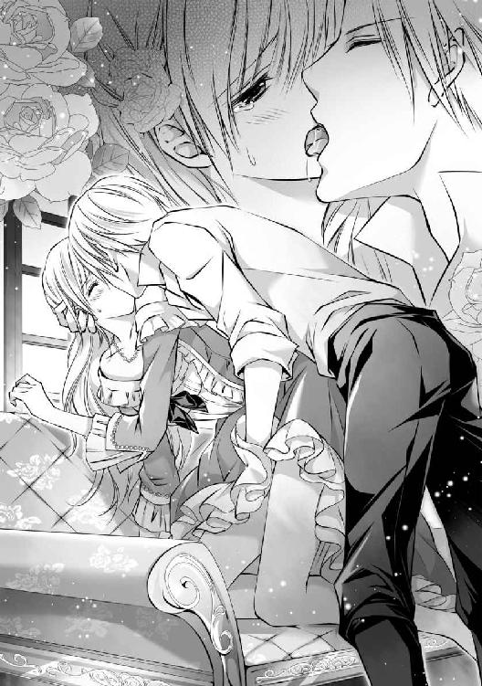

| 桃色宝石は愛欲に濡れて―双子侯爵に魅入られた瞳―【書下ろし・イラスト10枚入り】 (トパーズノベルス) | |
| 御子柴くれは | |
| (2016) | |
トパーズノベルス
桃色宝石は愛欲に濡れて～双子侯爵に魅入られた瞳～
著作 御子柴くれは
Illustration 弓槻みあ
この物語はフィクションであり、実在の人物・団体・事件とは一切関係ありません。
桃色宝石は愛欲に濡れて～双子侯爵に魅入られた瞳～
プロローグ 奪われた純潔
進められる手の感触に恐怖を覚えながら、しかしアンジェリカは陶然としてしまう。
「あっ......」
「ここが気持ちいいの？」
耳殻に唇を押しつけるようにささやかれ、ぞくりと身体が震えた。
男の指先はついに、アンジェリカが今まで誰にも触れられたことのない秘所にまでたどり着き、花弁を包み込むように触れられたあと、柔肉をそっと押し開いた。
とたんに、アンジェリカの口からは、これまで出したことのない嬌声が漏れ出る。
「い、やあっ......ふ......あ、あんっ──」
「いやなの？ うそだよね？」
男は意地悪く喉で笑い、いやらしく指先を動かし始めた。
すると、アンジェリカの秘められた部分からは次第に水音が響くようになり、しっとりと濡れた蜜口から流れた愛液が、つうっと太ももに伝っていくことが自分でもわかった。
「せ、せめて......ちゃんと、ベッドで......」
懇願するように目を向けた先に、天蓋付きの大きなベッドが鎮座していた。とうの彼が与えてくれたはずの豪奢なリネンと、クッションがいくつも並んでいる。
それなのに彼は、アンジェリカの寝室に入ってくるや否や、まだ昼間にも関わらず、性急に窓際の長椅子に押し倒したのである。
アンジェリカは無論のこと、抵抗に身体を起こして逃げようとしたのだったが、すぐに後ろから男の強い腕に捕らわれてしまった。今は窓枠に手をつかされ、長椅子の座面に膝をのせた不安定な状態で、彼に覆い被さられているところであった。
彼の右手はドレスの胸元を探り続け、左手は裾を割り開いた秘所に伸びたままだ。
「くぅ──」
アンジェリカの懇願に気を悪くしたのか、唐突に男の口が彼女の耳朶を食む。
甘い痺れが体内を駆け抜けた。が、アンジェリカはこれ以上、変な声を出したくはなかったから、懸命に唇を噛んでその快感をこらえていた。
「ねえ、アンジェ。僕は今すぐに、君が欲しいんだよ」
それは広々とした部屋だから、ベッドさえ遠く感じるということだろうか。
彼が愛称で呼んでくれたことはうれしかったけれど、アンジェリカは未だ戸惑いを隠せない。
アンジェリカが返答に困っていると、男が不安げに続けた。
「──君は、僕が嫌いなの？」
「......っ」
その問いには、アンジェリカは即座にぶんぶんと首を横に振った。
「好き──好き、です......！」
嫌いなはずがなかった。婚約者となったハルフォード侯爵に、一目惚れしてしまったのは、紛うことなき事実なのだから。
しかし、この城にきてから夜伽の覚悟をしていたアンジェリカを前に、そのハルフォード侯爵が婚前交渉はしないと断言した。結婚前の淫らな行為で、アンジェリカを汚したくはないと。アンジェリカを大切にしたいと、そう言ってくれたのだ。
男の人に慣れていないアンジェリカだったから、その言葉にどんなに救われたことか。そして、そんな優しいハルフォード侯爵を、ますます好きになってしまっていた。
だからなぜ、こんなことになってしまったのか──アンジェリカには、わからない。
「だったら、アンジェ。君は僕のものだ」
ハルフォード侯爵はなぜか自嘲気味に低く笑うと、胸元から抜き出した右手でアンジェリカの顎をつかむ。
「んぅっ......！」
そのままぐいと上向かされ、大きく喉をそらせたアンジェリカは、後ろからハルフォード侯爵のキスを受けることになった。
「はっ......ふぁっ......」
それは息継ぎすらままならない深い口づけだった。
唇をなぞるようになめられたあと、彼の舌は明確な意思をもってアンジェリカの口腔内に滑り込んできた。歯列を割り、歯茎から頬の裏、口蓋と、愛撫するように順に探られる。やがてそれが、ぎこちなく引っ込められたアンジェリカの舌を捉えると、無遠慮に絡ませてきたのであった。
「はあっ......んう......ふっ──」
こんなキスは知らないと、アンジェリカは次第にとろけていく頭の中で思う。
ハルフォード侯爵が与えてくれたキスはいつも、羽のように軽く、甘いものだった。
唇を重ねるだけの口づけと、抱き締めてくれる心地よさを知ったばかりのアンジェリカには、それがひどく淫らな行為に思えた。

羞恥に顔を染めながら、せめて反抗するように顔をそらそうとするが、がっちりとつかまれているので少しも動かすことができない。
それどころか、自由なはずの両腕や両足でさえ、まるで捕らわれているかのようにアンジェリカの思い通りになってくれないのだ。ハルフォード侯爵の一挙一動に、ぴくりぴくりと反応するだけである。
「キスだけでこんなになるなんてね」
ようやく唇を離してくれたハルフォード侯爵の左手が、さらにアンジェリカの奥をあばくように進む。ぐっしょりと濡れた秘部に、ずずっと指先が差し入れられた。
「ひぅっ！」
アンジェリカはあまりの愉悦に身体をすくませ、反射的に逃れようともがいていた。
「ダメだよ、アンジェ。だって、こんなになってるんだよ？」
子供を叱るような口調で、ハルフォード侯爵はアンジェリカをたしなめる。
秘部を探る指はいつの間にか三本にまで増やされていて、ぐちぐちと卑猥な音を立てながら、抽送を繰り返していた。侯爵の折り曲げた指の関節が深くアンジェリカの中に出し入れされるたびに、蜜孔からはとめどない愛液がこぼれていく。
「あ、あ、それっ......いやぁ......っ」
抗うことも忘れ、アンジェリカは与えられる快感に身もだえてしまう。
するとハルフォード侯爵は、アンジェリカの言葉を汲み取ってくれたのか、やんわりと言い継いだ。
「そうだね。これじゃあ、いやだよね」
ずるりと抜かれた彼の指先には糸を引くように、ねばついた液体が絡みついている。
アンジェリカは恥ずかしくなって目を伏せ、これ以上ひどいことはされないのだろうと安堵に胸をなで下ろしたが、ぞっとするような虚脱感を意識しないわけにはいかなかった。
アンジェリカの蜜孔は、もっと侯爵の指先を吸っていたかったと主張するように、ひくひくと妖しくうごめいていたのだった。
下ろされたままのドロワーズに手をかけようとしていたアンジェリカの目の端に、しかし信じられない光景が映る。
ハルフォード侯爵が、自身にまとわせていたトラウザーズの前をくつろがせていたのであった。
「......っ」
ひっと息を呑むアンジェリカを前に、そそり立った侯爵の男根があらわになる。
「アンジェ。君が求めている方をあげるよ」
そう言って彼は、固く熱を持った己の先端を、後ろからアンジェリカの蜜口に押し当てた。
何をされるのかわかったアンジェリカは慌てて身を引こうとするも、ハルフォード侯爵の腕が腰に回されていて逃れられなかった。そのまま強い力でぐっと尻を突き出すような格好をさせられ、秘列をなぞるように彼の鈴口を使って蜜を塗りたくられる。
「んふう......っ」
ぞくりとするような感覚に身体を震わせているアンジェリカの蜜孔が、ハルフォード侯爵の肉棒によってぐっと押し広げられ始めた。
「あああっ!!」
媚肉が左右に割られる感覚に、アンジェリカはひときわ大きな悲鳴を上げる。
とろとろにとろけきっていても、そこは男性を初めて受け入れる衝撃にわなないていたが、侯爵の熱杭は構わずにアンジェリカを貫いた。
「────」
目のくらむような痛みと、ふっと苦しげにうめくハルフォード侯爵の吐息が耳にかかり、アンジェリカは身を強張らせる。
「アンジェ。アンジェ、思った通り......君は僕の心だけでなく、身体も締めつける」
「......っ......っ──」
腰を引いては押し進めるという行為をひたすらに繰り返すハルフォード侯爵は、アンジェリカとつながっていることに陶酔しているようだったが、アンジェリカの方は先ほどまでの快感などとうに吹き飛んでおり、破瓜のつらさに瞳を濡らしていた。
ただただ、早く終わって欲しいと、唇を噛んでこらえている。
やがてハルフォード侯爵は、アンジェリカの尻に強く腰を打ちつけると、ぶるりと身を震わせた。
あまりにも唐突に体内で熱が弾けたことに、アンジェリカは呆然としてしまう。
まるで一滴も逃さないとでも言うように、ハルフォード侯爵はぴたりとアンジェリカに身体を重ねたまま、しばらく動かなかった。
「アンジェ、痛かったね？ ごめんね」
アンジェリカの中から己を引き抜いたハルフォード侯爵は、今までの乱暴な所業が嘘だったかのように、ハンカチーフで汚れを清めたのち、そっと彼女を後ろから優しく抱き締めてくれる。
「......っ」
アンジェリカは何も言い返せず、ただ黙って振り返ると、侯爵を抗議するように涙目でにらみつけた。
そんなアンジェリカを見て、しかしハルフォード侯爵はなぜかうれしそうに微笑む。
「それ、その瞳だよ」
「な、なんですか......」
「瞳が泣き濡れてきらめくと、まるでピンクダイヤモンドのように美しい」
「.........」
それはあのとき聞いた台詞であり、再び彼の口から聞きたいと思っていた言葉であったが、今は言って欲しくなかった。初恋の思い出が、身体と同様に汚されてしまうような気がしたからだ。
「だから君にはぜひ、僕の子を産んで欲しいと思ったんだ。きっと、美しい子ができるはずだよ」
「──っ」
しかし続く台詞に、アンジェリカは言葉を失ってしまう。
中に放たれた理由はわかったが、それはこんなふうにされてまで急くことなのであろうか。アンジェリカ自身、覚悟していたことだったが、とうのハルフォード侯爵が否と言ったのではなかったか。
「戸惑っているね」
混乱するアンジェリカを前に、ハルフォード侯爵が面白そうに喉の奥を鳴らす。
「真実が知りたい？」
「......はい」
まったく意味がわからないアンジェリカだったが、乱暴な振る舞いのわけは知りたい。
ハルフォード侯爵の整った顔をじっと見つめていると、やがて彼の唇が皮肉に歪められていった。
「僕はね、侯爵じゃあないんだ」
「......？」
怪訝そうに眉をひそめるアンジェリカに、彼は大仰に肩をすくめてみせる。
「僕は、ブラッドリー・ハルフォード。正式に侯爵位を継いだウィリアム・ハルフォードは、僕の双子の兄さ」
「っ──!!」
アンジェリカが大きく目をみはる。
けれど同時に、ハルフォード侯爵に感じていた数々の違和感の答えがわかり、アンジェリカは妙に納得している自分に気づいた。が、それも束の間のこと──。
「僕は兄を憎んでいるんだ。だから君には、兄ではなく僕の子を孕んでもらう」
「......えっ!?」
ブラッドリーの言葉は、アンジェリカの想像を絶するものであった。
また、そんな台詞を平然と吐く彼に、並々ならない恐怖を感じてもいた。
なぜならブラッドリーの顔は笑っていたが、ぎらりと光る鋭いその双眸は、少しも笑ってなどいなかったからだ。
侯爵家の事情など、このさいどうでもよかった。アンジェリカにとって重要なのはただひとつ、夫となるはずのウィリアム以外に身体を開かされたことにある。
アンジェリカはあまりの絶望のあまりめまいに襲われ、ついに卒倒してしまったのであった。
第一章 はじまりの舞踏会
ウェストン伯爵令嬢のアンジェリカは、非常に内向的な性格だった。
明るいシルバーブロンドの髪に、色素の薄い桃色の瞳、陶磁器のように滑らかな白い肌を持つ彼女は、派手な化粧や高価な宝飾品を身につけなくとも、人目を引く容姿をしている。
三人兄妹の真ん中に唯一、女性として生まれ、幼い頃に母親が亡くなってからは、ウェストン伯爵は彼女を何よりも大事に育ててきた。アンジェリカはそんな父親の愛情を一身に受け、美しく聡明な女性へと成長を遂げる。
社交界デビューを果たしたあとは、縁談が絶えないだろうと思っていたウェストン伯爵だったが、しかしアンジェリカがパーティーに出席することはめったになく、家の書庫で本ばかりを読む毎日が続いていたのである。
子供が寝る前に母親が物語を読み聞かせてやるように、伯爵もベッドの上のアンジェリカを前にして同じく本を開いていたのだったが、娘に甘い父親は彼女にせがまれるがままに、ときには一晩中でも付き合ってやっていた。
こうして本は、アンジェリカの睡眠を促すものではなく、アンジェリカの好奇心を刺激するアイテムになっていったのである。
したがって字が読めるようになってからは、アンジェリカは寝る前に限らず、片時も本を離すことがなくなった。
それは大きくなった今でも、変わることはなかった。
きっかけがとうの自分であるとはいえ、伯爵はもう十八歳を迎えるそんな娘の将来が心配で仕方なく、ある日ついに、己の執務室にアンジェリカを呼び出したのであった。
それは五月も終わり、初夏の風が吹き始める頃のことだった。
「アンジェリカ」
「はい、お父様」
机を挟んで向かい合わせになるふたりだったが、アンジェリカの方はこの部屋にしかない書物に、隙あらばちらりちらりと目を走らせていることが、ありありとうかがえてしまう。
ウェストン伯爵は、大仰に溜息をついた。
それに気づいたアンジェリカが、はっとして顔を父親の方に戻す。
「舞踏会の招待状が届いている」
アンジェリカの態度をあえてとがめることなく、ウェストン伯爵は一枚の封書を掲げてみせた。高級な羊皮紙が用いられたそれには、赤い蜜蝋で閉じられていた跡があり、それは公式な書類であることを意味していた。
アンジェリカがぴくりと肩を揺らすが、伯爵は構わずに言葉を続けた。
「これは東のハルフォード領の領主、ハルフォード侯爵主催のものだ」
「馬車で三日もかかるところなど、女の身ではつらいものがありますわ」
すかさずアンジェリカが反論してきたので、ウェストン伯爵は一瞬だけ返答に窮した。
アンジェリカは、なんとかうまく断ろうと頭を働かせているようだ。普通の淑女であれば、ハルフォード領までの距離など、即座に出てくるものではない。
ハルフォード領とは隣合わせにあるウェストン領ではあるが、広大な領地を持つハルフォード家が住まう城は、アンジェリカが言った通り、馬車で三日はかかる場所にある。
しかし今回ばかりは、ウェストン伯爵の方も譲れなかった。
「それには心配及ばん。ハルフォード家のカントリー・ハウスが、目と鼻の先にあるだろう？ 侯爵は、そこで舞踏会を開かれるということだ」
ウェストン領の東側、つまりハルフォード領の最西端には、豪奢な屋敷が建っていた。
商業で栄えている都とは違って、牧畜や農業を主としている領土の境目には、豊かな森が生い茂り、澄んだ小川が流れている。自然豊かなこの場所は代々、ハルフォード家の静養地として使われているらしい。
「............」
アンジェリカは何も言い返さなかったが、頭の中では懸命に策を巡らせているようだった。
もういちど彼女に断る理由を与えないために、ウェストン伯爵がやつぎばやに言う。
「ハルフォード侯爵は先頃、父君が亡くなって爵位を継いだばかりの青年だ。まだ、二十二歳だという。こたびの舞踏会は、彼の見合いの場でもあるそうだ」
すると、見合いという単語を聞いてから、アンジェリカは一転、沈んだような面持ちになった。
「......私が出席したところで、侯爵様のお目汚しになるだけですわ」
「なぜ、そんなことを──お前ほど美しく聡明な娘は、この国にはなかなかいないぞ？」
眉を下げる伯爵に、アンジェリカが弱々しく首を横に振った。
「お父様は親の欲目で、そうおっしゃるのです。物語に出てくる娘たちは皆、特別な血筋だったり能力を持っていたりしますわ。何も持たない私など、ほかのご令嬢たちに笑われてしまいます」
「............」
このときほど娘に本を読ませたことを後悔したことはないと、のちに伯爵は語る。
アンジェリカは無論のこと、舞踏会に出席せずに済む方法を考えていたには違いないが、先の台詞は本心から出てきたものであった。
彼女は本に没頭するがあまり、現実の世界の方に、うとくなってしまったのである。
ウェストン伯爵や、子爵を継いで今は離れた領地に暮らす兄のジェシー、アンジェリカの弟であるミカエルが、いくらそんなことはないと諭したところで、彼女はまるで聞く耳を持たない。
物語のように幸せになるためには、本気で何か普通ではないものを持っていないといけないと勘違いしているのだ。己の容姿がそうであることを、気に留めるそぶりもなく。
兄妹の中でアンジェリカだけが、亡き母親と同じ瞳を持っていた。同じく亡き母方の祖母もまた同じ瞳だったことから、どうやら女性に遺伝する特殊な色のようだ。
ウェストン伯爵は妻の、その瞳に惚れて求婚したと言っても過言ではない。
一見すると、色素が薄い桃色の虹彩は、光に当たったり涙に濡れたりすると、まるできらめくピンクダイヤモンドのような輝きを放つ。
この時代、ダイヤモンドは貴族社会の中では、華やかで確固たる色彩を持つサファイアやエメラルド、ルビーなどを押しのけた、主役の宝石だった。輝きを追求して開発されたラウンドブリリアントカットという画期的なカッティングスタイルが登場してからは、あっという間に社交界の花形に躍り出たのであった。
ダイヤモンドは、飽きることのない透明感のある色合いに加え、光を通すことによって格段にきらめきを増す。そんなダイヤモンドの優雅な曲線美は、まるで女性のようだと形容されることも少なくない。
貴族社会で受け入れられたことによって、東洋におけるダイヤモンドの採掘量は圧倒的に増加したと言われている。商業が盛んな王都などの大きな街には、カッティング技術を向上させようと職人たちが工房を連ね、ジュエリー文化の発展が著しい。
この、本来であれば無色透明であるはずのダイヤモンドに、時おり天然なピンク色をしたものが混じっていることがある。ピンクダイヤモンドだ。
なぜピンク色であるのかは解明されておらず、発見される頻度も非常に少なかったことから、神秘的な宝石として貴族たちの憧れの的であった。
その希少性の高さから、身につけた者に幸せを運んでくると、まことしやかにささやかれているほどだ。
「私に壁の花になれと、そんなむごいことをされるのですか？」
アンジェリカが涙目でにらみつけてくる。
それは思わず見惚れてしまうぐらい、ピンクダイヤモンドのように綺麗な輝きを有していたが、とうの本人だけがそのことに気づいていない。泣いているときに鏡をのぞく者などいないのだろうから、仕方がないのかもしれないが。
「くたびれた花のような瞳の私には、お似合いの場所でしょうけれど！」
それなのにアンジェリカは、母親が物心つくより前に死んでしまった影響なのか、自分ではしおれた、もしくはくすんだ花の色だと言ってはばからないのだ。いつの間にか語彙が増えたらしく、〝くたびれた〟は新しい方だ。
珍しい色合いは彼女のいう〝特殊な〟もののひとつであると伯爵は思うのだが、アンジェリカにとっては、容姿への劣等感にしかなっていないらしい。
何かにつけては、兄と弟が持つ父親譲りの鳶色の瞳をうらやましがり、しまいには書庫に引きこもってしまうのだった。
だからこそ、アンジェリカはますます本にのめり込んでいったのである。
ウェストン伯爵は再び、大きく息をついたのであった。
「壁の花......とは、また的を射ている比喩を、よくも持ち出してこられるものだ」
関心してか呆れてか、たぶん後者であろう、こめかみをもんでいる父親に向けて、アンジェリカはぱっと顔を輝かせた。
「では、出席しなくてもよろしいのですね？」
「それはならん」
しかし伯爵は即座に否定する。驚愕に目をみはるアンジェリカを見ないようにしながら、彼は説得を始めた。
「本当にその、壁の花とやらになるのかどうか、お前はいちどもまともなパーティーに出ていないのだから、証明することはできんだろう」
「ですが──」
アンジェリカは言いかけたが、今度は伯爵も反論の隙は与えなかった。
「そこまでお前が言うのであれば、今回を最後に社交界には出なくてもいい。この屋敷はいずれミカエルが継ぐことになるが、生涯お前には不自由しないように取り計らってやろう」
本来であれば、伯爵の家督と財産を継げる立場にある長男のジェシーは、子爵位をもらってから田舎にある所領地を治めており、そこで出会った男爵令嬢と結婚したのち、ふたりの子をもうけて幸せに暮らしている。
ジェシーは二十八歳という若さにも関わらず、今の穏やかな生活を崩したくないらしい。伯爵位を継げば必然的に、せわしなく立ち回らなければいけないことになってしまうからだ。
現在の父のように、娘の縁談にあくせくする必要もある。その点、王侯貴族や王都というしがらみから離れた子爵という立場は、非常に気ままだったのだ。
よってまだ十二歳である次男のミカエルが、いずれは伯爵位を継ぐことになるのだが、彼が結婚相手を屋敷に迎えるさい、小姑がいたら何かとわずらわしいだろう。
だからこそ頑なにウェストン伯爵は、アンジェリカを家から出そうと躍起になっていたのである。ゆえにこの提案は彼の、最後の手段でもあった。
「......本当でございますか？」
にわかには信じられないといった疑いの目で、アンジェリカはウェストン伯爵を見やった。なぜなら父親には常日頃、結婚しろとうるさく言われていたからだ。
アンジェリカは幸せな結婚など、ましてや男性に恋などできないと思っている。
自分に自信が持てないため、恋することはおろか、結婚する資格などないとさえ考えているからだ。
ミカエルに迷惑はかけたくなかったけれど、アンジェリカはこのまま実家で、死ぬまで本に囲まれて暮らしたいと願っていたのだった。
「本当だ」
そんなアンジェリカの思惑を知っていてなお、ウェストン伯爵は鷹揚にうなずいた。
「わかりました」
アンジェリカが意を決して告げる。
一生お嫁にいかず実家で暮らせるのであれば、たったいちどの舞踏会など、なんてことがないように思えてきていたのだ。パートナーの申し込みをされることがなくとも、本に囲まれている自分を想像すれば耐えられると。
その返答に伯爵が安堵することも束の間、アンジェリカは続けてこう言い放ったのであった。
「では私、壁の花になってまいりますわ！」
「............」
ぐっと決意に拳を作る天然な娘を前に、ウェストン伯爵はついに頭を抱えていたのであった。
しかし内心、伯爵はこれでやっと娘にも、もらい手が見つかると思っていた。
少々難のある性格を差し引いても、アンジェリカはその美貌から、舞踏会でひときわ目を引く存在となるだろう。アンジェリカが知らないことではあったが、彼女の存在はウェストン伯爵の秘蔵っ子として、ひそかに注目を集めていたのである。
ゆえに今回、ウェストン伯爵令嬢が参加するとあれば、主催のハルフォード侯爵のみならず、上級貴族の誰もがこぞって顔を出すことが見込まれていた。
そして彼の目論み通り、アンジェリカはこの舞踏会で、運命の出会いを果たすのであった。
ハルフォード侯爵主催の舞踏会当日、ウェストン伯爵は屋敷中の侍女をかき集め、伯爵家の総力をあげてアンジェリカを頭のてっぺんから足のつま先まで磨き上げ、着飾らせた。
結い上げられたシルバーブロンドの髪には、家宝であり母親の形見でもあるルビーを中心に真珠が散りばめられたティアラを載せられ、流行の胸元が大きく開いたデザインのドレスは、レースとリボンをふんだんにあしらった高級感のある臙脂色が選ばれた。白い肌に合うネックレスは無論のこと、瞳に似せたダイヤモンドだ。
どこからどう見ても立派な貴婦人の姿に、我がことながらアンジェリカは鏡の前で驚いてしまう。くるりと裾をひるがえしてみれば、あちこちがきらきらと光った。
アンジェリカはそのまま侍女を数人引き連れ、迎えにきていた兄夫妻と一緒に箱馬車に乗り込んだ。
令嬢が社交界に参加する場合には必ず同伴者が必要となるので、今日は遠方の領地から、はるばるジェシーとその妻であるアイリーンがやってきてくれたのだった。
しかし向かい合うふたりの顔は今や、戦地におもむく兵士のような決意に満ちていた。
午後にふたりが屋敷に到着したときには、久々に会う兄と義姉と熱い抱擁を交わし、談笑が許されていたアンジェリカだったが、お茶のさいにはアンジェリカは準備があるからと、ウェストン伯爵に強制的に引き離され、ひとりだけのけ者にされていた。
侍女の話によると、兄夫妻は何事かと深刻そうに父親と話し合っていたというので、おそらくはどちらもウェストン伯爵がアンジェリカの縁談で悩んでいることは承知しているのだろう。屋敷を離れられない伯爵に代わり、ジェシーとアイリーンは大役を仰せつかったに違いない。即ち今夜、必ずアンジェリカの伴侶を見つけてくると。
兄夫妻に任せて安堵したのか、実に満足そうに微笑むウェストン伯爵に見送られながら、馬車は複雑な面持ちのアンジェリカをハルフォード伯爵のカントリー・ハウスへと連れていった。
既に日が暮れ、辺りには夜のとばりが降り始めていた。
カントリー・ハウスとは名ばかりの、荘厳なたたずまいをした邸宅に足を踏み入れたアンジェリカは、あまりに華やかな世界を前に、思わず目をしばたたかせていた。
玄関ホールから続く大広間には大勢の男女が集い、きらめくシャンデリアから降り注ぐ光の下、楽団が奏でる音楽にのってダンスや談笑に興じている。
さっそく白黒のお仕着せをまとったウェイターが、アンジェリカたち三人にグラスを載せた盆を差し出してきた。ジェシーとアイリーンは受け取ったが、酒が好きではないアンジェリカは中身がワインだと聞くや否や、丁寧に辞していた。
兄が眉をひそめているのが目の端に映っていたが、あえて無視することにする。
人混みに酔いやすいアンジェリカなのだ。酒にまで酔うわけにはいかなかった。
ウェイターは別室に、サンドウィッチやビスケット、さらにジュースなど、軽食が一通り用意されていることを告げると、足早に次の客に向かって去っていった。
アンジェリカは、誰かと踊るようしきりに勧めてくる兄夫妻の言葉を聞き流しながら、壁の花になれそうな場所を探していた。
けれど、この屋敷の壁には有名な絵画や壺、花瓶などが等間隔に並べられており、傍による気も起きなかった。相手は美しい美術品や、本物の花なのだ。
高貴な屋敷では壁の花にもなれないのかと、アンジェリカが消沈してうつむき、内心で軽く絶望しかけていたとき──彼女の目に、よく磨かれた男性靴が映った。
視線を上にあげれば、髭をたくわえた紳士が、目元にしわを刻んで立っていた。
彼は胸元に手を当て、もう片方の手の平をアンジェリカへと差し出している。
しばらく呆然と固まっていたアンジェリカだったが、これはダンスのパートナーとして申し込まれているのだと、彼女はややあって気づくことになる。
同時に頭に浮かんだのは、本に囲まれて暮らす生活が遠のいていく自分の姿だった。
アンジェリカがすがるように隣の兄に目を向ければ、ジェシーだけではなくアイリーンもまた踊ってこいと促すのだ。どうやら彼らは、父親の管理下にあるらしい。
身内に助けは求められないのだとアンジェリカが悟り、ひとまずは別室に逃げ込んでしまおうと、髭の紳士に断りを入れようとしたのだが、とうの彼が見つからない。
なぜならこのとき、アンジェリカはすっかりあらゆる紳士たちによって、取り囲まれてしまっていたからである。
どの紳士もアンジェリカと踊るのは自分が先だと言って譲らないので、アンジェリカの周囲がにわかにざわめき立ち、やがて公平性を謳う紳士たちによって勝手に順番が決められていく。
ああでもないこうでもないという男たちの低い声と、むっとするような汗混じりの匂い、そして何より圧迫感のある人混みに酔い、アンジェリカは次第に気分が悪くなってきた。
アンジェリカの人気に安心したのだろう、いつの間にかジェシーはアイリーンと共に姿を消してしまっており、アンジェリカは吐き気が込み上げていることを誰にも言えずに、ひたすらに扇で隠した顔を左右に振って、きょろきょろと出口を捜していた。
すぐにでも夜風に当たって酔いを覚ましたい。
ようやく近くに、カーテンがかけられたガラス戸を見つける。
おそらくはテラスにつながっているのだろうと、アンジェリカは未だ争い続ける紳士たちの輪から、そっと抜け出した。
幸いにも紳士たちは順番決めに夢中で、アンジェリカの動きに気づいていない。
そうっと足を踏み出すと、突き刺すような視線を感じた。
振り返れば、取り残されていたらしい淑女たちがいた。アンジェリカを忌々しそうにじろりとねめつけながら、ひそひそとうわさ話に興じている。アンジェリカが会場から出ようとしているなど、当然ながら伝えようとする者はいない。
「............」
アンジェリカは気まずくなり、逃げるようにそそくさと開け放されたテラスに向かった。
カーテンをくぐると、ひやりとした夜気がほてった身体を包み込み、風が心地よく頬をなでていく。
月の明るい晩だった。
広い庭園の真ん中には可愛らしい噴水があり、あちこちには人や動物を模したような彫像が品よく置かれている。テラスを取り囲むように咲く花々のほかに、遠くには温室のようなものも見えたので、主のこだわりが行き届いているように思われた。
アンジェリカは自然、裾を持ち上げて足を進めていた。
「綺麗......」
次第に遠くなる楽団の演奏を背中に、アンジェリカがほうっと溜息をつく。アンジェリカは本の次に、美しい花が咲き乱れる庭園が好きだった。
しかし、感心するのも束の間のこと。
演奏が一曲終わったのか、人々の弾けるような拍手と笑いがどっと押し寄せてくると、先ほどまでの会場の様子が頭をよぎり、唐突にうっと吐き気が込み上げてきた。
そうしてこらえるように、即座に屈み込んだアンジェリカの頭の上から突然、低い声がかかる。
「大丈夫ですか？」
「──っ！」
アンジェリカがはっと顔を上げると、ひとりの紳士が心配そうにこちらをうかがっているところであった。
年は、二十歳をいくつか超えているぐらいだろうか。前髪が分けられたプラチナブロンドの髪に、青味がかった緑色の瞳。涼やかな目元、凛々しい眉、高い鼻梁に薄い唇と、顔立ちは綺麗と形容されてもおかしくないほどに、ひどく整っていた。
そんな長身痩躯の青年紳士の服装は、シャツにベスト、ぴったりとしたトラウザーズにブーツ、薄手のフロックコートというひとそろいで、それぞれに上等な生地が使用されていることが一目でうかがえるほど、金糸や銀糸の刺繍が細かく施されている。
戸惑っていたことから、未だに言葉を発せないアンジェリカを気遣ってか、青年はにっこりと優しく微笑んでくれた。精悍な顔が一転して、穏やかなものへと変わる。
「これを」
そうして彼は、扇で顔を隠しているアンジェリカに向かって、胸元から取り出したシルクのハンカチーフを差し出してきた。
ちょうど再び吐き気の波に襲われていたアンジェリカは、思わずそれを受け取ってしまい、慌てて口元に当てる。
込み上げてくるものをこらえているうちに、目にはじわりと涙が浮かんできた。
青年はいつの間にかアンジェリカの横に膝を立てており、優しい手つきで背中をさすってくれていた。
「吐いてしまうと、楽になりますよ？」
「............」
青年はそう言ってくれたけれど、さすがに淑女としてそれはできない。
名前も知らない紳士の前で嘔吐するなど、ウェストン伯爵の名前に傷をつけてしまうことになるだろう。さすがにこれ以上、父親に顔向けできなくなることだけは避けたかったので、アンジェリカは懸命にこらえ続けていた。
青年の介抱のおかげで、やがて気分を落ち着かせたアンジェリカが、ようやくまともに口を開いた。
「あ、ありがとうございました──」
そうして青年の方を振り向くと、青年はそれまで微笑んでいた顔を驚きに変える。
さらに、きょとんとするアンジェリカを前に、無遠慮にもじっと見つめてきたのだ。
「あ、あの......」
アンジェリカは思わず目を伏せていた。
けれどそれは、青年の振る舞いに気分を害したからではない。傍でよく見ると、青年の顔がやはりとても綺麗だったから、見つめ合うことが恥ずかしくなってしまったのである。
自然にどきどきと胸が高鳴り、アンジェリカはなぜか息苦しさを覚えていた。
青年はアンジェリカのそんな態度に、はっと我に返ったようで、慌てて言い継いだ。
「レディを見つめるなど不躾なことをしてしまい、申し訳ございません」
ただ......と、青年のまっすぐな目が、アンジェリカに注がれる。
「あなたのように美しい瞳を見るのが初めてでしたので、つい魅入ってしまったのです」
「美しい......？ 私の瞳がですか？」
信じられないとばかりに、アンジェリカが顔を上げる。
すると青年は再び、あの穏やかな微笑みを浮かべてくれた。
「失礼しました。いいえ、あなた自身がお美しいのです」
「──っ!!」
アンジェリカの頬は完全に上気してしまい、頭は煮え立ちそうなぐらいくらくらしていた。
そんなことを男性に言われることが生まれて初めてなので、心の中ではまるで物語のヒロインになったような錯覚に陥っていたのだった。この青年と相対していることが、想像していた王子様との出会いそのままに感じられていた。気分を悪くしていたアンジェリカを、目の前の青年は間違いなく助けてくれたのだから──。
青年は優雅な所作で立ち上がると、アンジェリカに向かって恭しく腰を折ってみせた。
「どうかお名前をお聞かせいただけませんか、レディ」
すっかり吐き気など吹き飛んでしまったアンジェリカもまた、同じように立ち上がると、青年を前に姿勢を正して改めて向き直る。
アンジェリカよりも頭ひとつぶん高い身長を持つ彼を見上げるようにして、彼女は薔薇色の紅が差された唇を動かした。
「ア、アンジェリカ──アンジェリカ・ウェストンと、申します」
「あなた......いや、君がうわさの、深窓のご令嬢だったのですね」
得心したように、青年がうなずいていた。
アンジェリカが戸惑いに瞳を揺らす。
「う、うわさだなんて......私は、人と関わることが苦手なだけだったのです」
社交界デビューを果たしている、それも政略結婚が当たり前の伯爵令嬢でありながら、こんなことを言ってしまったら、なんの覚悟もできていない小娘だと笑われるかもしれない──そう思ったアンジェリカは、今度は違う意味で瞳を涙に濡らしていた。
そんなアンジェリカの頬に、青年の手がすっと伸びてくる。
「......っ」
思わずびくりと身体をすくませていたアンジェリカの涙の筋を、青年の指先がそっとぬぐってくれた。それはアンジェリカを安心させるような、ひどく優しい手つきだった。
アンジェリカの心臓はついに壊れそうなほど痛くなり、自然と身を守るような、胸元を抱く格好になっていた。
青年はその様子を勘違いしたのか、急いで手を引っ込めた。
「すみませんっ、つい──」
ふいと視線をそらした青年の心が離れていってしまうような気がして、アンジェリカは慌てて手に持ったハンカチーフを青年に向かって差し出していた。
「こ、これっ......あ、ありがとうございました！ 私などに優しくしてくださって、本当にうれしかったです......っ」
そうして思いつく限りの礼をやつぎばやに述べると、青年がうっすらと笑ってくれる。しかし、ハンカチーフを受け取ってもらうことはなかった。
「差し上げます。今宵の記念に」
「そんなっ......」
シルクのハンカチーフは、とても高価なものだ。おそらくは上級貴族のひとりであろう青年の私物をもらうなんて、アンジェリカには恐れ多いことだった。が、続く青年の言葉に、すっかり我を忘れてしまうことになる。
「それを僕だと、お思いください。君が涙を流したとき、いつでも傍にいられるように」
「────」
しかしアンジェリカの想いは、声にならない。
青年はアンジェリカの応えを待たずして、流れるような動作で硬直している彼女の手を取ると、その甲にそっと口づけた。
手の甲から伝わる熱が、ぴりりと電流が走るように、身体に甘い痺れをもたらした。夜闇に紛れていたせいで、青年は気づいていなかったが、アンジェリカの顔はもう真っ赤であった。
「もうすぐ夏とはいえ、まだまだ夜は冷えます。決して無理はされず、もうお帰りになるとよろしいでしょう」
そうして青年は身をひるがえして、この場から去っていこうとした。
切なげな瞳でその背を見送っていたアンジェリカだったが、いちばん大事なことを思い出して、はしたなくもつい声を張り上げていた。
「せ、姓だけでも、お聞かせいただけませんか......!?」
機会があれば、いつかこのハンカチーフを洗って返そうと思っていたのだ。
このときアンジェリカは意識していないことではあったが、それは間違いなく、彼女がもういちど、この青年に会いたいという気持ちを如実に表していたのだった。名前まで聞けなかったのは、たんに勇気がなかったからにほかならない。
ぴたりと足を止めた青年が、こちらを振り返る。彼はそれに気づいているのだろう、笑っていた。
「ハルフォード。この屋敷の主人です」
それだけ言ったのち、青年──ハルフォード侯爵は、会場である広間に戻っていった。
あとには、呆然と目を見開くアンジェリカだけが残されていたのだった。
舞踏会から既に、三日が経過していた。
アンジェリカはあの夜、誰とも踊ることはなかったのに、ウェストン伯爵邸には連日、ぞくぞくと縁談の申し込み状が届くようになっていた。
内容は、アンジェリカの姿を一目見て惚れてしまったという類が多く、どうやらアンジェリカの中身はいっさい関係ないらしい。
父のウェストン伯爵は、そんなことなどお構いなしに狂喜乱舞して、申し込み状を見比べる作業に没頭する日々を送っていた。無論、アンジェの幸せも考えてはいるだろうが政略結婚には違いないので、どの相手がより己の地位を確固たるものにしてくれるか、そればかりが優先なのだろう。
唯一、アンジェリカの気持ちを慮ってくれるはずの兄ジェシーと義姉アイリーン夫妻は既に、この屋敷にはいない。
舞踏会でアンジェリカが紳士たちに囲まれるところを確認している彼らは、ぶじに役目を果たしてすっかり安心してしまったようだ。結婚式には必ず参加するという旨の言葉を残し、家令に任せきりの領地に急ぎ戻っていってしまった。
ところがアンジェリカは、ますます部屋に引きこもるようになっていた。
それも大好きな書庫に足を運ぶことなく、日がな一日、窓辺の長椅子に腰かけて、深く長い溜息をつくという毎日を繰り返していたのだ。
手に持っているのは、ハルフォード侯爵がくれた、あのシルクのハンカチーフ。
そう、アンジェラは病にかかっていたのだった。恋患いという名の、病に──。
ベッドの上に置かれたままの物語の本にちらりと目を向けるも、読む気がいっこうに起きない。
なぜならアンジェリカは既に、物語に出てくるヒロインと同じ経験をしていたのだ。現実の王子様に出会ってしまった。だから虚構の話には、興味が持てなくなってしまったのである。どこかに自分の物語が本になっていればいいのにと、そんな意味のないことさえ考えてしまう。
だけどそしたら、ハルフォード侯爵と自分がこの先どうなるかわかるのにと、アンジェリカは思う。
そうして本を開かないことによって手持ちぶさたとなったアンジェリカは、ふいに思い立つと、化粧箪笥のひとつより針箱を取り出した。裁縫道具一式が入ったそこから、クロスステッチ針と刺繍用の枠を選ぶ。
再び長椅子にゆったりと腰かけながら、アンジェリカはシルクのハンカチーフに刺繍を始めた。このままでは、あの出来事が自分の中で薄れてしまうような気がして、せめて〝ハルフォード〟という名前を刻んでおきたいと考えたのだ。
淑女としてのたしなみをある程度、教わってきたアンジェリカだから、器用にも針はすいすいと進んでいく。
いつ嫁にいっても恥をかかないようにと、ウェストン伯爵に仕込まれているのだ。
そして刺繍を始めたことには、もうひとつ別の理由もあった。
自分はそう遠くない将来、あの舞踏会に出席していた紳士のひとりと結婚することになるだろうと、アンジェリカにはわかっている。
それがハルフォード侯爵であれば最高なのだが、主催者であり淑女の注目の的でもあるはずの彼が、吐き気をこらえて会場を抜け出していた相手になど、興味はないだろう。だから彼は、アンジェリカに早く帰るよう促したに決まっている。
アンジェリカを美しいと言ってくれたのは、紳士特有の社交辞令に違いない。本当にアンジェリカを好いていたのであれば、ダンスのひとつでも踊ってくれていただろうからだ。
でもアンジェリカにとっては、ハルフォード侯爵との短い逢瀬が全てだった。
だから初恋の思い出として、手元に残しておけるものが欲しかったのだ。
このハンカチーフがあれば、どこにいくことになっても寂しくはない......覚えずにじむ涙を無視して、アンジェリカは無心に刺繍を続けていた。
やがて窓から、誰かの来訪を告げる声が聞こえ、アンジェリカがはっと顔を上げる。
あっという間に、数刻が経過していたらしい。
陽が既に、西に向かって傾き始めていた。
ハンカチーフには、あの夜に見た彼の瞳の色に合わせ、緑と青の糸を使って〝ハルフォード〟と紡がれている。
針箱を片づけながら、アンジェリカがそっと窓辺から顔をのぞかせると、郵便配達の荷馬車が門前に停まっているのが見えた。
「............」
家令が配達員から手紙の束を受け取る様子が目に映り、アンジェリカは知らず溜息をついていた。あれはおそらく、今日のぶんの縁談申し込み状に違いない。
なぜ言葉も交わしたことのない紳士たちが自分を選んでくれるのか、アンジェリカにはさっぱりわからない。
同じように着飾っていた令嬢はたくさん会場にいたし、アンジェリカはハルフォード侯爵と別れたあとは、すぐに兄のジェシーに不調を訴え、帰宅していたので、結局は誰かと踊ることはおろか、話をすることさえなかったのだ。
兄と義姉のアイリーンは心配しつつも、しきりにどんな紳士がいたのかと尋ねてきたが、アンジェリカは気分が悪いふりをして黙っていた。
けれどそのときから頭の中には、ハルフォード侯爵のことしかなかったのである。
「初恋は実らないって物語に書いてあったけど、本当だったのね」
アンジェリカがなんとはなしにそうつぶやいたとき、部屋の扉が控えめにノックされる。
アンジェリカは慌ててハンカチーフを折りたたむと、即座に胸元に忍ばせた。
許可に従って入ってきたのは、アンジェリカ付きの年かさの侍女であった。
「旦那様がお呼びです、お嬢様」
「お父様が......？」
ついにこの日がきてしまったのかと、アンジェリカは蒼白になって立ちつくした。
たとえ今きた郵便物がさらなる縁談の申し込み状だろうと、たとえば王侯貴族など圧倒的に身分が高く、王族に連なる紳士が既にいたら、ウェストン伯爵はアンジェリカの結婚相手を即決してしまうだろう。
父親とは食事の席などで顔を合わせることはあったが、こうして呼び出されたのは、舞踏会にいって以来、今日が初めてだった。
彼がそのように取り計らうわけは、舞踏会への出席を促されたことと同じで、アンジェリカに公的な何かを命じるときなのだ。
胸元に入っているハンカチーフをお守りのように抱き締めながら、アンジェリカは侍女について屋敷の廊下を歩いていく。
この場所にいられるのも、あとわずかなのだろう。そう考えると、ますます悲しみが増してきた。
途中、中庭で飼い犬と戯れているミカエルの無邪気な姿を窓から見て、彼が背負う伯爵という使命はさておき、この家にいられるのだからと、うらやましく思ってしまう。娘の場合は、どうあっても政の道具になるのが定めだったからだ。
ようやくウェストン伯爵の執務室にたどり着いたアンジェリカは、恭しく来訪を告げてドアを開ける侍女に促され、緊張した面持ちで中へと入っていった。
ウェストン伯爵は山と詰まれた書状に埋もれるようにして、机に向かっていた。
「おお、きたか。アンジェリカ」
「はい、お父様」
従順に裾をつまんで膝を折り、淑女としての挨拶をするも、アンジェリカの心は絶望の中にあった。
「お前の結婚相手が決まったぞ」
「............」
アンジェリカは黙したまま、暗い目を父に向けて先を待った。
ウェストン伯爵は、実に上機嫌に笑っている。
「オルブライト伯爵だ」
「......はい」
名前も知らない紳士だったが、うなずくしかアンジェリカに選択肢はない。
そうして机の向こうから差し出された姿絵によって、あの舞踏会で最初に声をかけてきた髭の紳士だということがわかった。決してハンサムではないとは言わないが、アンジェリカとは相当、年が離れていることは一目でうかがえる。
「南のオルブライト領は知っているだろう？ 漁業で潤っている大都市を持ち、さらに伯爵は国王の遠縁に当たる。アンジェリカは一生、不自由することはないだろう」
「年上すぎるのでは？」
「ふむ」
娘のわずかばかりの反抗には、しかしウェストン伯爵自体も思うところがあるようで、難しそうに眉間にしわを刻んだ。何せオルブライト伯爵は見る限り、彼と同じぐらいの歳なのだから。
「確かに少しばかり上だとは思うが、前妻に先立たれて苦慮されているらしい。なんでも書状には、アンジェリカが亡き前妻に生き写しだと言うのだが──」
伯爵がそこまで言ったところで、唐突なノックの音が会話をさえぎった。
「入れ」
ドアの向こうの家令にそう返答するも、彼はアンジェリカに向かってオルブライト伯爵のよいところを述べることに必死になっていた。
「まあ、お前の美貌と一緒にされると、こちらとしてもあまりいい気はしないのだがな、それでも彼が国王と縁があることは非常に意味が大きい。伝統と格式ある我が家とも、釣り合いが取れる家系だ。ゆえに、いずれお前も王宮の──なんだ？」
顔をしかめた父親の目線を追い、アンジェリカもまた不可解な様子に眉を寄せる。
家令は慌てた様子で、書状の束を主に差し出しているのだった。いつもならば、そっとウェストン伯爵の机上に置くだけで去っていくはずなのだが。
「アンジェリカの縁談は、決まったようなものだ。いまさらこれ以上の......」
いちばん上の封書を手に取ったウェストン伯爵は、なぜかそれきり黙ってしまう。
「お父様？」
心配になったアンジェリカが、そっと声をかけると、ウェストン伯爵はぶるぶると身体を震わせながら顔を上げた。
「ア、アンジェリカ......お前、いつあの方とお知り合いになったのだ？」
問われたことの意味がわからず、アンジェリカが怪訝と小首を傾げる。
するとウェストン伯爵は、赤い蜜蝋で封がされた書状を掲げてみせた。
「っ......!!」
アンジェリカは息を呑む。それだけで差出人が誰か、わかってしまったのだ。
高貴な羊皮紙に、独特の印が施された封蝋──それは、舞踏会の招待状とまったく同じ形式だったからだ。違う箇所はただひとつ、表面の〝招待状〟という文字の代わりに、〝申し込み状〟と書かれているところのみ。
ウェストン伯爵は未だ震える指先で丁寧に封書を開けると、中に入っていた一枚の手紙に急いで目を走らせた。
やがて彼は、どきどきと胸を高鳴らせているアンジェリカに、次のように告げたのであった。
「アンジェリカ。結婚相手は決まったが、たった今、その相手が変わった」
「──っ」
期待に胸をうずかせるアンジェリカを前に、ウェストン伯爵はよくやったとばかりに豪快に笑う。
「ウィリアム・ハルフォード侯爵だ。あの舞踏会の主催者、ハルフォード侯爵が、お前を嫁に欲しいと申し出てくれた」
「ほ、本当ですか......？」
つい聞き返してしまったアンジェリカだったが、おそらくは伯爵自身も未だ理解が追いついていないのだろう、彼は何度も何度も手紙に目を通し、間違いがないことを確認すると、大きくうなずいた。
「ああ、本当だ」
「お父様！」
アンジェリカは思わず机を回り込んで、ウェストン伯爵に抱きついてしまっていた。
机上に重ねられていた、オルブライト伯爵を含むすべての申し込み状が床へと散っていくのもお構いなしに、伯爵もまた喜ぶ娘をぎゅっと抱き締めた。
「あの御方は、あの御方はっ......ウィリアム様とおっしゃるのですね!?」
「そうだ、ウィリアム・ハルフォード侯爵だ。この国で指折りの名家であり、現国王の甥の息子に当たる御方でもある。期待はしていなかったが、まさかとうの彼から申し込み状が届くとは......」
「私も未だに信じられませんっ」
「舞踏会では、何か特別にお話されたのか？」
「ええ。私が体調を崩しているところを、優しく介抱してくださいましたの」
「なんとっ」
ウェストン伯爵は驚いて娘を離し、しっかりとアンジェリカの目を見て言った。
「そんなご迷惑をおかけしていたのか!?」
「ごめんなさい──」
悄然と肩を落とすアンジェリカにしかし、伯爵は「でかしたぞ！」と拳を掲げた。
「言葉は交わしたのだな？」
「ええ」
「すると、名前は聞かれたのだな？」
「ええ、もちろん」
「それならば、安心だ。お前が誰とも踊らなかったと聞いたときには驚いたが、そういう事情があったのなら、侯爵も表面でお前を選んだわけではあるまい」
でも......と、アンジェリカは不安を口にする。
「侯爵様は私に、早く帰れとおっしゃったのですよ？ 本当に私でよいのかしら？」
するとウェストン伯爵は、くっくと面白そうに喉を鳴らして笑い出した。
「な、なぜ笑うのです!?」
真っ赤になったアンジェリカをなだめるように、伯爵は笑いを噛み殺しながら言った。
「それはお前を、ほかの紳士の前に出したくなかったからだろう」
「えっ──」
考えもつかなかったことに、アンジェリカは目を見開く。次第に鼓動を速める心臓は、気のせいなどではないだろう。
父親は懐かしそうに目を細めた。
「私と亡きお前の母も舞踏会で出会ったが、会場に残っている母さんを見て、ほかの紳士が近づかないか、気が気ではなかったな」
「お父様......」
寂しそうにつぶやく父の手を、アンジェリカはいたわるように己の手に重ねた。
ウェストン伯爵が苦笑する。
「お前も、侯爵を愛しているのだな？」
「はい」
「ここしばらく部屋にこもりきりだったのは、恋の病か？」
「そうですわ」
アンジェリカは続けて大きく首肯した。
「なら、お前たちは幸せになれるだろう。心から祝福できる縁談となり、私もうれしいぞ」
満足そうにうんうんとうなずくウェストン伯爵だったが、ふいに疑問が口をつく。
「それにしてもそんなに気に入ってくださっていたのに、なぜこんなにも縁談の話が遅くなったのだろうな」
それに応えたのは、未だ隣に控えていた老翁に近い年の家令だった。
「ハルフォード侯爵様の本邸までは、馬車で三日はかかります。舞踏会の翌日に申し込み状を書いたとしても、到着するのは当たり前ですが、三日後になりましょう」
「そうか......そうだな」
ウェストン伯爵は、納得するように顎をなでた。たとえほかの紳士たちに遅れを取ろうが正式な書状であれば、本邸から送るのが筋だろうと考えたからだ。
けれどアンジェリカの方は逆に、疑問が湧いてしまう。
「でも、あのとき侯爵様は、ここからそうかからないカントリー・ハウスにいらしたのだわ」
単純に計算しても、本当にハルフォード侯爵が本邸に帰ってから書状をしたためたとすれば、六日はかかることになるだろう。
しかし父親の方は、からからと笑ってアンジェリカの考えを一蹴する。
「お前を気に入るがあまり、あの夜すぐに早馬で帰られたのであろう。なんという情熱だ。お前への愛の深さも含め、ますます彼を気に入ってしまったよ！」
「............」
アンジェリカはもう何も言わなかったが、パーティーの主催者が途中で抜け出すことなどありえるのか、社交界にたいして顔を出さない彼女には判断がつかない。
確かに馬を単騎で飛ばせば、翌朝には本邸にたどり着いているはずだが、彼がそこまでしてくれる理由もアンジェリカには思いつかなかった。
ウェストン伯爵の方はまっさらになった机の上で、さっそく承諾する旨の手紙をつづり始めていた。
こうしてアンジェリカ・ウェストンは正式に、ウィリアム・ハルフォード侯爵の婚約者となる。
互いの所領地が遠いことから、一ヵ月後と決められた王都での結婚式を前に、アンジェリカは早々にハルフォード城に迎えられることになったのである。
豪奢な細工の施された箱馬車に揺られるアンジェリカは、花嫁道具一式と一緒に、期待に胸を弾ませてハルフォード領へと入っていったのだった。あのハンカチーフも忘れることなく、胸元に忍ばせている。機会があれば、返すつもりでいたのだ。
「ハルフォード侯爵様......」
大事そうに胸を押さえ、流れる景色を目に映しながら、アンジェリカはうっとりとつぶやいた。そうしてどんな物語にも勝る幸せの予感を前に、ひとときの休息に目を閉じるのだった。
第二章 ハルフォード家の秘密
荷物が多かったこと、そしてアンジェリカの体調を気遣い、馬車はウェストン領の出発から約五日後の夕刻に、ハルフォード城に到着した。
アンジェリカ一行を迎えた守衛が、さっそく馬車を停める手伝いをしてくれる。
ウェストン家から連れてきた侍女や侍従たちが、次々と荷物を下ろしていく中で、キャビンを降りたアンジェリカは、縮まった身体を伸ばしつつ感嘆の溜息をついた。
「なんて素敵なお城かしら......」
アンジェリカがこれまで暮らしていたウェストン伯爵の屋敷も、領主の威厳をたたえた豪奢なたたずまいをしているが、ハルフォード侯爵の所有する城とは、その爵位と同様に格が違う。
ハルフォード城は小高い丘の上にあり、緑に囲まれた美しい場所に建っている。
古くからの名残だろうか、ぐるりと城を覆う城郭の横には監視台や見張り塔が並び、ハルフォードの騎士団員たちが忙しなく動き回っているのがうかがえた。
守衛に促されて城門をくぐれば、広大な敷地を見渡すことができる。
色とりどりの花々が咲き乱れる庭園には噴水にベンチ、有名な彫刻が並び、遠くには温室や東屋もあった。芝生が敷き詰められたこの庭には、まっすぐに石畳の道が続いており、これをたどっていくと、玄関に着くようになっているらしい。
案内役の守衛は、嬉々として城の説明を続けてくれた。
ようやく建造物群が見えてきたところで、アンジェリカは思わずわっと歓声を上げていた。ハルフォード城がまるで、物語に出てくるような瀟洒な造りをしていたからである。
いくつもの尖塔を構えた外観は、白色で統一されており、ところどころに灰や茶の飾りが入っている。規則的に並ぶ窓には、ステンドグラスがはめ込まれているようで、沈みゆく夕陽を反射してきらきらと光り、全体的に幻想的な雰囲気を醸し出していた。そこからさらにコの字に伸びた建物があり、左翼は騎士団員用、右翼は城仕えの者たち専用の居住区になっているということだった。
アンジェリカがいくら見ても見たりないほど素敵な城を目に映している間に、一行は早くも玄関前にたどり着いていた。
そこには、城の侍女とおぼしきお仕着せをまとった何人もの女性たちが整列していた。
「ウェストン伯爵のご令嬢、アンジェリカ様ですね？」
先頭の真ん中に立つ、髪に白いものが交じり始めた年配の侍女が声をかけてくる。おそらくは、侍女頭だろう。
アンジェリカは姿勢を正すと、淑女にふさわしい礼をしてみせた。
「はい、アンジェリカ・ウェストンと申します」
相手が身分下だろうと、アンジェリカには関係ない。これから世話になるのだから、敬意を示すべきだと彼女は思っている。
すると、そんなアンジェリカの態度に驚いたのであろうか、侍女頭はわずかに目を見開き、ほっそりとした顔に深いしわを刻んだ。
「旦那様から、手厚くおもてなしするよう仰せつかっております」
侍女頭の目配せを受け、後ろに控えていた侍女たちが、次々にアンジェリカ一行の荷物を持ち始めた。
「ここからはどうぞ、わたくしたちにお任せくださいませ」
「うちの者たちは今夜、泊まらせていただいてもよろしいのでしょうか？」
ハルフォード家の侍女たちの領分だというのであれば、アンジェリカが連れてきた侍従や侍女たちのやることがなくなってしまう。けれど長旅で疲れている彼らをこのまま帰すわけにはいかなかった。
そんなアンジェリカの不安を、侍女頭は笑みを浮かべて一掃してくれる。
「もちろんでございます。今宵はアンジェリカ様をお迎えするに当たり、晩餐会が催される予定となっております。皆様にもぜひご出席くださいますよう、旦那様も望まれることでしょう」
「そうですか。わざわざありがとうございます」
アンジェリカは、ほっと胸をなで下ろす。
こうしてアンジェリカ付きの侍従や侍女たちは明日、ウェストン領に帰ることとなり、今夜は城の右翼にある居住区に迎えられることとなった。晩餐会の折りには、ウェストン家側の代表として手伝いに出すことになっている。
これで馴染みの従者たちとは完全に別れることになるが、一抹の寂しさを覚えながらもアンジェリカは、侍女頭が案内する城の中の何もかもに胸をときめかせていた。
「柱のひとつひとつにまで、凝った細工がされているのですね」
感心したように言うアンジェリカに、前をいく侍女頭が答える。
「ええ。この城をデザインしたのは建築家でも技術者でもなく、宮廷劇場で働いていた画家なのです。先代の旦那様は芸術をたいそうめでられる御方で、ご自身の住まう城も作品のひとつとしたかったそうです。よって内外共に、中世への憧れを具現化したような城の形となりました」
「まあ......そんな事情が──」
アンジェリカは目を瞬き、物語に出てくるようなロマンチックな城内を改めて見回そうとした。
しかし侍女頭が突然、足を止めたので、アンジェリカはその場でたたらを踏む。
「旦那様、アンジェリカ様をお連れいたしました」
「！」
その言葉に驚き、アンジェリカは既にハルフォード侯爵がいる執務室の前に立っているのだということに気づく。壁にかけられた絵画のひとつに目をやっていた顔を、慌てて前に固定した。
「入れ」
間もなくして、ドアの向こうから低い声が短く告げる。
恭しく扉を開ける侍女頭に続いてアンジェリカが入室すると、ハルフォード侯爵は机に顔を向けて書きものをしている最中であった。
アンジェリカはその姿を見て、思わず心臓を跳ねさせていた。
前髪が流されたプラチナブロンドの髪に、端正な面立ち──間違いなく、舞踏会のテラスで出会った彼だと思ったからだ。袖をまくったシャツに装飾の凝ったベスト、トラウザーズにブーツという簡素な装いのハルフォード侯爵を見て自然、あの晩と重なった。
知らず胸元に入っているハンカチーフを抱くように身体をすぼませていたアンジェリカに向かって、彼がようやく顔を上げてくれた。
「すまない。急ぎの書類が溜まっていてね」
疲れたような様子のハルフォード侯爵はしかし、アンジェリカを視界に入れると、大きく目をみはった。
「これは......確かに、美しい」
呆気に取られているような侯爵に、アンジェリカはなんと返したらいいかわからない。彼に美しいと言われるのはこれで二度目だったが、わずかながらの違和感を抱いていたこともある。こんなにも唐突に、それもはっきりと言う人だっただろうか。
「旦那様」
コホンという咳払いと共に、アンジェリカの後ろに控える侍女頭が、咎めるような口調で主を呼ぶ。
すると我に返ったハルフォード侯爵は、不快そうに眉をひそめた。
「......美しいものを美しいと言って、何が悪い」
「それが不器用だと申し上げているのです。対面したばかりの女性に言う言葉ではございません」
きっぱりと述べる侍女頭に、思うところがあったのか、ハルフォード侯爵は気まずそうに頭をかいた。
侍女頭はハルフォード侯爵の乳母でもあったと、アンジェリカは先ほど聞いていたばかりだった。どうやら彼は、未だに乳母に頭が上がらないらしい。
そんなふたりの様子がおかしくて、アンジェリカは緊張していた顔をほころばせた。
「仲がよろしいのですね」
こんなにも温かい城でなら、楽しくやっていけそうだ──そう思っていたアンジェリカを、ハルフォード侯爵はなぜかほんのりと頬を朱に染めて見やった。
「な、長い道中、お疲れだったでしょうに」
急にどもり始めた彼に戸惑うことも忘れ、アンジェリカは微笑む。
「いいえ。多くの町や村を訪れることができたので、とてもよい経験になりましたわ」
それを聞いて、ハルフォード侯爵も微笑み返してくれた。あのテラスで見せてくれたときと同じ顔に、アンジェリカの胸は高鳴る。
「あなたは実に、侯爵夫人としてふさわしい器量をお持ちのようだ」
「め、めっそうもうございません！」
アンジェリカは偉そうなことを言ってしまったと顔を赤らめ、ぶんぶんと両手を振った。
「当然です。ひと目見たときから、わたくしにもわかりましたから」
気づくのが遅いのだと諭すように、つんと上向く侍女頭に目をすがめつつも、ハルフォード侯爵はそんな彼女の方を顎でしゃくった。
「何かあれば、すべてキャロルに言って欲しい。あなたが望むものを、なんでも用意させよう」
侍女頭──キャロルが黙礼する中で、アンジェリカは恐縮そうに頭を下げる。
「なんでもなんて、そんな......生活に必要な道具は一式、自宅から持ってきたので大丈夫ですわ」
感心するように見つめてくる侯爵とは違い、キャロルの方がしかし、叱責するように言った。
「アンジェリカ様。あなたはこれから、旦那様のご正妻となるのです。由緒あるハルフォード家にふさわしい格好や振る舞いをされなければなりません」
「......！」
それは暗に、アンジェリカはもっと〝わがまま〟になっていいのだということを示していた。彼女はとうに、アンジェリカが謙虚かつ質素倹約家であることを見抜いていたのだろう。それは仕えるべき主人としても嫁としてもふさわしい資質だったが、ハルフォード侯爵の正妻としては、やや物足りないということでもあった。
ウェストン家ではそれでよかったのかもしれないが、上流階級は権力を誇示するために、豪華な装いや偉そうな立ち振る舞いをしなければならない。そうすればするほど注目を浴びることにつながり、階級差を世に知らしめることになるのだ。
「で、では──」
困り果てたアンジェリカは、それならばと一歩、前に出た。
「侯爵様には、これをお受け取りいただきたいと思っております」
「これは？」
アンジェリカが胸元から取り出したシルクのハンカチーフを、ハルフォード侯爵は不思議そうに見つめた。それがアンジェリカのわがままだとは、とても思えなかったのだろう。
その通り、アンジェリカはただ、ハルフォード侯爵に思い出の品を差し出しただけであった。けれどそれは、今のアンジェリカにとって最大限のわがままだったのだ。
「お忘れですか？ あのテラスで、私にくださったものです」
「あ、ああ......」
ハルフォード侯爵はハンカチーフに見入ってはいたものの、なぜか歯切れが悪い。
それが刺繍のせいだと思ったアンジェリカは、慌てて謝罪の言葉を添えた。
「勝手に刺繍など施して、申し訳ございません」
「いや、うまいものだな」
ハンカチーフを受け取ったハルフォード侯爵は、しげしげと刺繍された部分を触っている。
褒められたアンジェリカは気をよくして、彼の顔をのぞき込んだ。
「ありがとうございます。実は侯爵様の瞳のお色に──あら？」
「なんだ？」
わずかに肩を揺らしたハルフォード侯爵。
「私、おそらく夜だったから、見間違えてしまったのですね」
その顔を改めて見つめていたアンジェリカは、申し訳なさそうに続けた。
「侯爵様の瞳のお色は、緑がかった青ですのに、私ったら青がかった緑だと思っておりましたの」
〝ハルフォード〟と紡がれた刺繍糸は、青を基調とした緑色に仕上げられている。
「──っ」
ハルフォード侯爵が息を呑んだが、恥ずかしそうに顔を伏せていたアンジェリカは気づかない。
「きっと、光のかげんもあるのでしょうね。夜はまるでエメラルドのようだと思いましたが、今はサファイアのように輝いておりますわ」
「......悪いな。急ぎの書類が、まだ残っているんだ」
ハルフォード侯爵が、唐突に会話をきった。
「今日は、お前のための晩餐会を予定している。話はまた、そこで」
侯爵の態度から察したのであろう、キャロルが即座に扉を開けてくれる音が、背中に感じられる。
「わかりました。お仕事中に申し訳ございませんでした。それでは失礼いたします」
アンジェリカは丁寧に礼をしてから執務室を辞したが、なぜ侯爵が急に不機嫌になってしまったのかわからない。
それに彼の言葉遣いも、テラスであったときよりも厳しいような気がしてならなかった。
キャロルが何も言ってくれなかったこともあり、未だ数々の違和感がぬぐえないアンジェリカは、それが仕事中だったからだと懸命に、己に言い聞かせていた。
それから間もなくして、大広間を使った晩餐会が盛大に催されたが、長いテーブルの端と端についたアンジェリカとハルフォード侯爵は、主役にも関わらず結局、互いに言葉を交わすことはいちどもなかった。
領地周辺の貴族たちが集まっていたこともあり、ふたりとも、食べる暇もなく挨拶だけで終わってしまったと言っても過言ではない。特に、アンジェリカの周りには人が途切れることがなかったので、危うくまた酔ってしまうところであった。
キャロルが退室を促してくれたとき、アンジェリカは安堵の溜息をついたが、会場に残るハルフォード侯爵を名残惜しげに見つめていた。
本当であれば、あのテラスでのことを語り合いたかったのにと、寂しく思う。ハンカチーフを受け取ってくれたときも、そう言えばなんの感慨もないようだったことを思うと、押し込めていた不安が首をもたげた。
けれど気を遣ったキャロルが、「これからはいやでも一生、旦那様と一緒です」と言ってくれたことで、感じていた寂しさも不安も笑いに変わった。
アンジェリカに与えられたのは、陽当たりがよいという南向きの大きな部屋だった。ハルフォード城での慌ただしい日を終えたアンジェリカは、キャロルを筆頭とした侍女たちに支度を手伝ってもらい、ようやく疲れた身体をベッドに横たえたのであった。
その日の真夜中、控えめなノックがアンジェリカの部屋に響いた。
アンジェリカは驚いて目を覚ましたが、夢か空耳かと思い、しばらくはベッドの中で耳を澄ませていた。
すると、コンコンと、再びドアを叩く音が聞こえた。気のせいではないらしい。
こんな時間に何事かと不審に思いながら、スリッパに足を通した。
アンジェリカのためにわざわざ造り直したという部屋は、とても広い。
大きな天蓋付きのベッドが三分の一を占拠しているほか、暖炉、鏡台、化粧箪笥、二脚のイスとテーブルのセット、くつろぐための長椅子など、あらゆる調度品がそろえられており、ふたつあるドアはそれぞれバスルームとトイレにつながっている。
慣れない空間を手探りで進みながら、途中で燭台に火を入れて、アンジェリカはようやくノブに手をかけると、おそるおそる誰何した。
「あの、どなたでしょうか......？」
キャロルであれば、とうに自ら名乗っているはずだ。次第に募る不安はしかし、すぐに吹き飛ばされた。
「俺だ」
声の主が、ハルフォード侯爵だったからである。
アンジェリカが慌てて解錠すると、扉は勢いよく向こう側から開き、ハルフォード侯爵が周囲を気にしながら、急いで部屋の中に滑り込んできた。
今の今まで広間にいたのだろうか、ハルフォード侯爵は晩餐会で着ていた正装のままであった。部屋の中には、彼がまとった葉巻や酒の匂いが漂い始めていた。
「こんな時間にすまない」
夜着の上に薄手のガウンを羽織っただけのアンジェリカを前に、目のやり場に困ったのか、ハルフォード侯爵はわずかに頬を染めて視線をそらした。
「いったい、どうされましたの？」
「謝罪にきたんだ」
未だ状況が呑み込めないアンジェリカに、彼が重々しく告げる。
「謝罪？」
きょとんと首を傾げるアンジェリカをテーブルの方に導きながら、ハルフォード侯爵が先に腰かける。アンジェリカもそれにならって隣に座った。
「俺は立場があるから、人前でお前を気遣ってやることができない」
唐突にそんなことを言ったハルフォード侯爵の顔は苦悩に歪んでおり、アンジェリカに心から申し訳ないと思っているようだった。おそらく晩餐会で、一言も言葉を交わさなかったことを言っているのだろう。テーブルの上で組まれた手も、心なしか震えている。
そこまで気にかけてもらえるとは思ってもいなかったので、アンジェリカの胸がとくんと鳴る。うれしさと気恥ずかしさのあまり、自然と笑みがこぼれていた。
「まあ......そんなこと、お気になさらないでください。わかっておりますから」
その言葉に安心したのか、ハルフォード侯爵がほっとしたような顔を上げた。
「お前は──本当に、侯爵夫人に申し分ない器量の持ち主だな」
「............」
ふっと口角を上げたハルフォード侯爵の端正な顔を目の前に据え、しかしアンジェリカの中にはなぜか、夕刻に抱いた違和感が再び持ち上がってきていた。
あのテラスで出会った初恋のハルフォード侯爵は、もっと女性の扱いに慣れた性格だったように思うのだ。笑みも温和で、今の彼のように不敵なものではなかった。
例えば彼は、アンジェリカのことを〝君〟と言っていたはずだ。
けれど一瞬のような出来事だったので、我がことながら確信は持てない。あまりに思い出を大切にしすぎて、美化されてしまったのだろうか。今の彼が嫌いなわけではないし、むしろ好きだと思うが、なぜかいけないような気がしてならない。
「なぜ、黙っている？」
アンジェリカが考え込んでいたためか、ハルフォード侯爵の表情が曇る。
「いえ......その──」
言い訳に困ったアンジェリカは、この違和感を説明するべきか迷っていた。
しかしハルフォード侯爵の方が先に、ああと得心したように首を横に振ったのだった。
「そう構えないでも、決して襲ったりはしない」
「えっ」
そんなことなどまったく考えていなかったアンジェリカは、真夜中の密室にふたりきりでいる意味についていまさらながら思い至り、顔を真っ赤にしてしまった。
戸惑うアンジェリカを気にするそぶりもみせず、ハルフォード侯爵が淡々と言う。
「俺は、何事も伝統と格式を大切にしたいと思っているんだ。だからこそ、神の前で永遠の愛を誓うまでは、婚前交渉はしないと決めている」
「............」
アンジェリカは、目が点になったような心地がしていた。一応は覚悟して城に入ってきた彼女だったが、その生真面目さには、ぽかんと口を開いてしまう。
「は、はあ」
「婚姻前の淫らな行為で、お前を汚したくはない。大切にしたいんだ」
「！」
安堵と共に覚えずぽっと頬を染めるアンジェリカを前に、
「ただ......その、あれだ」
侯爵の方が突然、歯切れが悪くなった。
アンジェリカが黙って耳を傾けていると、彼は非常に言いづらそうに先を続けた。
「く、口づけは許される」
問い返す間もなかった。
「──っ!!」
一瞬だけ柔らかいものが唇に触れたかと思うと、すぐに離れていった。
驚きに目をみはっているアンジェリカが何か声を出す前に、ハルフォード侯爵は既に席を立っていた。
「は、早く休め！」
それは、起こしたのは誰だったのか、思わず突っ込みたくなる台詞だった。
ハルフォード侯爵はそうして燕尾服の裾をひるがえすと、恥ずかしそうにそそくさと部屋から出ていってしまった。去りぎわにちらりと見えた彼の顔は、アンジェリカ以上に真っ赤であった。
残されたアンジェリカは唐突なキスに唖然としながらも、次第に上がっていく熱に気づかずにはいられなかった。
アンジェリカがハルフォード城に滞在するようになってから、二週間が経った。
城での生活にもだいぶ慣れてきたアンジェリカは、昼間はハルフォード侯爵が執務で忙しいため、キャロルと共に城内を見学したり家臣たちの名前を覚えたりと、いずれ侯爵夫人になったときに困らないよう、ハルフォード家でのしきたりを学ぶことに従事していた。
そして午後の茶会のさいには、庭園の東屋でハルフォード侯爵と一緒にすごし、たわいもない会話に興じる。
たいていは疲れた顔で現れる彼だったが、アンジェリカの姿を認めるや否や機嫌がよくなり、不器用ながらもその日の彼女の髪型やドレスを褒めてくれた。
ときにはテーブルの上で手を握ったりもするけれど、ハルフォード侯爵が彼女に与えてくれるのは、厚い抱擁と、羽のように軽いキスだけだ。
アンジェリカは、日に日に花開いていく自分の心と身体を自覚していた。
彼の碧眼を見たり低い声を聞いたりすると、アンジェリカの胸は自然に鼓動を速め、自然と浮き立ってしまうのである。
つながれる武骨な手の熱、壊れ物のように抱き締める力強さ、なでるような唇への口づけ──アンジェリカの心は、すっかりハルフォード侯爵一色に染められていた。
とうのハルフォード侯爵も同じなのだろう、何かにつけてはアンジェリカに贈り物をしたがり、彼女の部屋は今ではキャロルに注意されるほど、花束や宝飾品であふれ返ってしまっていた。
また城内では、そんなふたりはうわさの的で、アンジェリカへの高い評判と同じく、仲むつまじい夫妻になると、結婚を今か今かと楽しみにする雰囲気が次第に高まっているところであった。
そんな蜜月に似た時間をすごしていたある日、ハルフォード侯爵は結婚式の会場の視察に王都へおもむくことになった。
国王夫妻からの呼び出しもかねていたので、視察とは名ばかりの仕事であるのだが、無論のことまだ正式な妻ではないアンジェリカは、一緒にいくことはできない。
早朝の城門前には、仰々しい馬車の一団が形成されており、王都まで付き従う騎士団員らが馬の調整や荷物の確認などに追われていた。
家令に留守中のあれこれを伝えているハルフォード侯爵の後ろ姿を見つめながら、アンジェリカはどんどん気持ちが沈んでいくのが自分でもわかった。
キャロルと数人の侍女を引き連れた彼女は、侯爵の見送りに出ているのだが、寂しくて仕方がない。
無事に帰ってきてくれるのか、早くまた一緒にお茶がしたい、そんなことばかりが頭を占めて、気づけば暗い顔をしてしまっていたらしい。
「アンジェリカ、こい」
ふいに振り向いたハルフォード侯爵と目が合い、即座に呼びつけられる。
「はい、侯爵様」
アンジェリカは手を引かれるがまま、なぜか尖塔の大きな柱の陰に身を隠す侯爵の目の前に立たされることになった。
「......っ」
未来の侯爵夫人らしく気丈に振る舞わなければ──そう思うアンジェリカはしかし、何も言葉が浮かんでこない。口を開けば、涙が出そうになってしまう。
懸命にこらえているアンジェリカを、眉を下げて見つめていたハルフォード侯爵は、人目を気にしながらも、その場でぎゅっとアンジェリカを抱き締めてくれた。
「────」
包み込まれるような侯爵の体温に、安堵してしまう自分を否定できない。
この人に恋をしているのだ、愛しているのだと、アンジェリカは思う。
アンジェリカはハルフォード侯爵の首に腕を回し、今にも泣きそうになる自分をなんとか律していた。
「すぐ、戻るから」
それを知っていてか、ハルフォード侯爵がなだめるように言う。
「はい、はいっ」
「み、耳はやめてくれ」
「え──」
アンジェリカが問う間も与えられず、ハルフォード侯爵はアンジェリカを離すと、赤らめた顔で彼女を眼前に据え、生真面目に話し始めた。
「耳元に息を吹きかけられると、理性がもたん」
「まあっ......す、すみません、侯爵様」
アンジェリカもまた、真っ赤になって頭を下げた。
先ほどアンジェリカは、ハルフォード侯爵の耳元でささやくようなマネをしてしまっていた。どうやら彼は、耳が弱いらしい。
するとハルフォード侯爵は、違う部分で不快に思ったようだ。唐突に眉根を寄せる。
「いいかげん、〝侯爵様〟はやめないか」
アンジェリカがはっと顔を上げる。
「では、なんとお呼びすれば？」
「............」
ハルフォード侯爵はしばらく思案するように上向いていたが、ややあって短くこう告げた。
「ウィル」
「ウィル？」
きょとんと小首を傾げたアンジェリカのシルバーブロンドの髪を一房すくい、ハルフォード侯爵が微笑む。
「俺の名だ、ウィリアム。だから、ウィルでいい」
「ウィル......様」
ぎこちない呼び方に、ハルフォード侯爵──ウィリアムは、くっくと喉を鳴らした。
「お前は本当に、きた頃と変わらないな」
そうして彼は、アンジェリカの髪に恭しく口づける。
「──！」
髪だというのに、まるでアンジェリカの性感が一本一本にいき渡っているかのように、彼女は思わず身体を震わせていた。
そんなアンジェリカの不審な様子には気づかなかったらしいウィリアムは、名残惜しさを振り払うかのように、外套をひるがえして背を向けた。
「明日には帰ってくるから、いい子にしてるんだぞ」
本当であれば三日の予定を、ウィリアムが無理を押し通して一日に縮めたことなど、アンジェリカは知らない。彼もまた、アンジェリカと離れるのがつらいのだ。
「まあ、ウィル様。私は子供じゃございませんのよ？」
ぷんぷんとわざとらしく怒ってみせるアンジェリカに、ウィリアムがふっと笑う。
「そうだったな」
一団に戻ろうとするウィリアムに向かって、アンジェリカは急いで声をかけた。
「あ、あのっ......いってらっしゃいませ！」
未来の侯爵夫人はついどもってしまったが、
「──ああ、いってくる」
ウィリアムは即座に返してくれた。背中で応えた彼だったが、その顔には満足げな笑みが浮かんでいることが、アンジェリカにはわかっていた。
アンジェリカは心にぽっかりと穴が空いたような気持ちがしていたため、キャロルに頼んで午前の予定を繰り上げ、少しばかり部屋で休ませてもらうことにした。
いつもならば予定通り進めたがる彼女がなぜか、このときは快く承諾してくれたのであったが、アンジェリカは特別、気にすることはなかった。
それよりも、先ほど送り出したウィリアムの顔や声が何度も何度も脳裏に浮かんでは消え、アンジェリカの胸はきゅっと締めつけられる。
呼吸もままならないほどに痛む胸を押さえながら、アンジェリカはよろよろと廊下を歩いて、やっとのことで私室にたどり着いた。
ドアの前に立つと、ウィリアムがここでノックをしていたことを思い出し、さらにつきりと心臓が音を立てる。
深い溜息をこぼしつつドアを開いたアンジェリカの目にはしかし、今まさに会いたくてたまらない人の姿が映っていた。
「......っ!?」
唖然と目を見開くアンジェリカに、彼──ウィリアムが妖艶に微笑んでみせる。
「アンジェリカ」
窓ぎわに立っていたウィリアムはアンジェリカの姿を認めると、うれしそうにこちらに向かってきた。
袖をまくったシャツにトラウザーズ、ブーツという、出立前とは打って変わって、城にいるときのような簡素な装いである。
アンジェリカは、軽い混乱に陥っていた。彼女は確かに今、とうの彼が城を去るのを見ていたからである。
こんなにも早く着替えを済ませて、部屋に訪れることなど可能なのだろうか。
しかし自分の名前が呼ばれたことで、やはりウィリアムに違いないと、アンジェリカは思う。彼が政務をさぼるような人格の持ち主だとはまったく思えなかったが、この部屋に自由に入れるのは自分と、城の主であるハルフォード侯爵だけなのだから。
恋しくてたまらなかったはずの相手を目の前に据え、アンジェリカは驚いて言葉を続けた。
「っ......侯爵──ウ、ウィル様？ どうしてこちらに......」
「ふうん、ウィル。ウィル、ねえ」
するとなぜかウィリアムは、自分の呼び名を舌の先で転がすように繰り返す。そして唐突に、にっこりと笑ったのであった。
「じゃあ僕は、君を〝アンジェ〟と呼ぼうかな」
「は、はあ......」
とても今朝までのウィリアムとは思えないぐらい甘ったるい声で、彼は未だ理解が追いついていないアンジェリカを抱き締めてきた。
「会いたかったよ、アンジェ。この日が、待ち遠しかった......！」
まるで長い間、数里の距離で隔てられていたかのように、ウィリアムはアンジェリカをかき抱いて背中と腰に腕を回し、柔らかな彼女の首筋に顔をうずめている。
戦地から帰ってきたみたいに大仰な言葉を連ねるウィリアムに、アンジェリカはなだめるように言った。
「先ほどもこうして抱き締めてくれたではありませんか」
ぴくりと、ウィリアムの肩が揺れる。
すっとアンジェリカから離れると、不自然な笑顔で問うてきた。
「ねえ、アンジェ。僕のあげたハンカチは、今も持ってくれているかい？」
「............」
アンジェリカはわずかに怪訝と眉を寄せるも、失礼になってはいけないと、丁寧に説明し直した。
「こちらにきたときにお渡しして以来、大事に使ってくださっているではありませんか」
とたんにアンジェリカは、強い力で腕を引っ張られた。
「きゃっ──」
ウィリアムは何も言わず、アンジェリカを引きずるようにして窓辺に連れていく。
先ほどまでの笑みが嘘のように険しい表情をしたウィリアムが怖くて、アンジェリカもまた抵抗することができなかった。
そのまま、とすんと長椅子に仰向けに転がされてしまう。
「──！」
彼が何をしようとしているのか瞬時に悟ったアンジェリカは、慌てて起き上がって逃げようとするも、ウィリアムに後ろからつかまれて捕らえられた。
「あっ......」
こうしてアンジェリカは、婚前交渉はしないと約束していたハルフォード侯爵に裏切られ、純潔を散らされることになるのであったが──。
気づけばアンジェリカは、私室のベッドの上に寝かされていた。
ずきずきと痛む下肢に加え、きしむカラダ全体に眉をひそめ、自分の身に何が起きたのか次第に、鮮明に思い出されていく。
「────」
アンジェリカの口からは声にならない悲鳴が上がり、どうしようもない絶望が込み上げてくる。
婚約者の顔をした別の人間により、アンジェリカは組み敷かれてしまったのだ。
じわりと浮かぶ涙をこらえながら、枕にもたれていた頭を傾けてみるが、情事のあとにしては衣服の乱れがなく、身体も清められているようだった。
不思議に思って上体を起こしたアンジェリカは、しかし愕然とすることになる。
目の前には、イスに腰かけて優雅に紅茶をすすっているブラッドリーの姿があったからだ。
「っ──!!」
大きく目を見開いて、アンジェリカは硬直していた。
ブラッドリーはアンジェリカが起きたことに気づいていたが、慌てることもなく、逆に面白そうにこちらの出方をうかがっている。窓から入ってくる陽の光によって、彼の顔半分がほの暗く映り、よけいに不気味な雰囲気を醸し出していた。
伸びた影が西ということは、既に昼をすぎており、あれからずいぶん時間が経っていることになる。
キャロルを始め城の者たちが、姿を見せない自分を心配しているに違いない。
そんなアンジェリカの内情を汲んだのか、ソーサーにカップを戻すカチャリという音が聞こえ、アンジェリカがびくりと肩を揺らす。
「心配ないよ。この部屋は今、人払いをさせているから」
「......人払い？ なぜです？」
その〝なぜ〟に様々な想いが交錯していたためか、ブラッドリーが苦笑する。
「乳母だったキャロルだけなんだ。僕たちの事情を知っているのは」
「......！」
ブラッドリーの言葉によりアンジェリカは、彼がウィリアムの双子の弟だと名乗ったときのことが思い出される。未だにブラッドリーだというハルフォード侯爵の存在は信じられなかったが、目の前にウィリアムと同じ顔と身体の持ち主が存在している以上、否定することは難しい。
さらにショックだったのは、信頼していたキャロルが、それをいちどもアンジェリカに言わなかったことだ。
「キャロルが、どうして──」
やっとのことで紡がれた声に、ブラッドリーが肩をすくめてみせる。
「彼女は僕に同情しているからね」
彼は続けて、気を失っていたアンジェリカの身支度を調え、自分に紅茶を用意していったのはキャロルだと告げた。
ということはキャロルは、この事態を知っていて黙認していたことになる。ウィリアムの留守中、こうなることを予期しない彼女ではないだろう。
キャロルに何が起きたか知られてしまっているという羞恥に、思わず目を伏せたアンジェリカだったが、さらに続けられたブラッドリーの言葉に、即座に顔を上げることになる。
「この国では、双子が忌み嫌われていることは知っているね？」
「え......」
唐突な話題を前に、呆けたような声を上げるアンジェリカ。
ブラッドリーは組んだ足をぶらぶらさせ、まるで天気の話でもしているかのような気安い口ぶりである。
「まあ、元をたどれば、古くから根づいている宗教的観念が大きいらしいけれど、とにかく現王は双子の場合、次男もしくは次女は殺すべきだというお考えの持ち主でね」
「............」
それはアンジェリカも知っている。同じ人間がふたりいるのはおかしいことだと、この国の教典が示しているからだ。
「だけど僕の家は、仮にも王侯貴族に連なる名家だったから、父親は悩んだ末、僕と兄をときどき入れ替えることで、まるでひとりの人間に見えるように装うことにしたんだ。母親が出産時に錯乱してしまっていてね、宗教など関係なしに、僕が殺されたら自害しかねない勢いだったらしい。だから、僕は母に救われたようなものだったんだ」
眉を下げて話を聞くアンジェリカに向かって、ブラッドリーは自嘲気味に口角を吊り上げた。
「僕は生きることが許されたけれど、いつだって兄の影でしかなかった。僕の番が回ってきても、皆は僕のことを〝ウィリアム〟と呼ぶからね。何をするにも僕は、ウィリアムでなければいけなかった。──ああ、ちなみに兄さんを〝ウィル〟なんて愛称で呼ぶ許可をもらえたのは、この世でただひとり、アンジェ、君だけだよ」
どう反応していいかわからなくて、アンジェリカは視線をさまよわせていた。
「兄さんはよほど、アンジェのことが好きらしい。さすが双子だと思わないかい？ 僕が見つけてきたのに、女の趣味まで一緒なのだから、まいっちゃうよね。でもね、兄さんには女性経験がないんだ」
ブラッドリーは面白そうに、くつくつと喉を鳴らした。
「だから〝ウィリアム〟の女性遍歴はすべて、僕の方さ。今日みたいに、キャロルが協力してくれたことが何度もあった。彼女は僕に、兄さんと同じ幸せを得てもらいたいと思ってるようだ」
皮肉げに笑うブラッドリーが、アンジェリカには痛々しく見えた。
先代のハルフォード侯爵夫人は出産後、すぐに亡くなったと聞いていたから、乳母であるキャロルが育ての親だと言っても過言ではない。
そう考えると、同じ顔と身体を持ちながらも、いつも影でしかない弟をキャロルが不憫に思っていただろうことは想像にかたくなかった。
「兄さんは、真面目だからね。女性に気安い僕が許せないときもあったみたいだけれど、いざ花嫁選びの段になって、こういうことは苦手だからと、初めてそのいっさいを僕に任せてきたんだ」
「............」
アンジェリカはここで、ようやくふに落ちた。
やはりカントリー・ハウスで出会った方は、ウィリアム・ハルフォードではなく、ウィリアムになり代わっていたブラッドリーだったのだ。そしてようやく、城にきてから抱いていた数々の違和感の正体がわかる。
「うん、君が思っている通りだよ」
アンジェリカの心を読んだかのように、ブラッドリーがうなずく。
「あの舞踏会の主催者は、僕の方。城には兄さんがいたから、別邸を使うことにしたんだ。そこで、最も侯爵夫人にふさわしかった君を見つけたのさ」
「で、でも──」
そこまでの経緯は一応、納得できたのだが、問題はどうして現在、ブラッドリーが兄のウィリアムを目の敵にしているか──自分がこのような目に遭ったのかということだった。
戸惑いを浮かべるアンジェリカに、ブラッドリーは足を組み直して先を続けた。
「そう。ここで初めて、今まで意識的に避け続けていた問題が、僕たちの中に生じたんだ」
「結婚後の生活をどうするか......？」
ぽつりと漏らしたアンジェリカの言葉に、ことさらうれしそうにブラッドリーが微笑む。
「その通り。キャロルから聞いてはいたけれど、君は本当に美しいだけではなく、頭の回転も速いんだね」
「そんなこと──それより、わけをお話しください」
アンジェリカは急いていた。この時点ではまだ、理由によってはウィリアムにも許されるかもしれないと、彼女はわらにもすがる想いでいっぱいだったのだ。
「順番に話させてよ。時間はたっぷりあるんだから」
「......っ」
わずかに苛立ったブラッドリーを前に、状況を理解したアンジェリカが押し黙る。
ブラッドリーは影とはいえ、ウィリアムと同様に、この城では権威を誇れる存在なのだ。つまり、彼との間に何があったとしても、誰も助けてはくれないということになる。逆らってはいけないと、本能が警鐘を鳴らしていた。
そんなアンジェリカのおびえた表情を見て、ブラッドリーが皮肉げに顔を歪める。
「──舞踏会で君を見つけてから、従者に手紙を持たせてね。先にこの城に帰らせたのさ。兄さんにすぐにでも縁談の申し込み状を送らせないと、時間差で君がほかの紳士に奪われてしまう可能性があったからね。君はそれほどまでに、あの会場では浮いた存在だったんだ。もちろん、いい意味でね」
つまりあの書状は、ハルフォード侯爵から出されたものに違いはないが、正しくはブラッドリー・ハルフォードに促されたウィリアム・ハルフォードがしたためたということになる。
アンジェリカをいちども目にしていないウィリアムが、正式なサインをしてしまうほどまでに、片割れとして生きてきたブラッドリーは、彼に信頼されていたのだろう。こうして裏切られるとも知らずに──。
「だから、あのとき......私に早く帰るようおっしゃったのですね？」
父であるウェストン伯爵の言葉を思い出していたアンジェリカに、ブラッドリーが大きく首肯した。
「うん。侯爵夫人となることが決まったような君を、あの場所に残しておくことができるわけがないだろう？」
「────」
父もまた、会場に残っていた母が、ほかの紳士に取られないか気が気ではなかったと言っていた。それが、相手に恋をするということなのだろう。
目の前の彼も、舞踏会で出会った彼も、本物の婚約者ではなかったのだから、うれしいと思ってはいけないのに、そんなことを言われてしまうと心が揺らぐ。
そんなアンジェリカの内心を知ってか知らずか、ブラッドリーはここで顔を曇らせた。
「だけどね、いざ城に帰ってみたら、兄さんが言うんだ。仕事はこれまで通りふたりでもできるが、結婚生活だけは無理だってね」
「......っ」
アンジェリカが息を呑む。
ブラッドリーは心持ちトーンを低くした声で続けた。
「確かに、そうは思うよ。これまでは誰でもだませてきたけれど、それは誰とも深い付き合いにはならなかったからだ。領主は孤独だし、孤高でね。皆、表だけの付き合いだと言っても過言ではない。だから、たとえ姿が同じふたりが交互に現れたところで、多少の違和感を抱かれることがあっても、指摘されることはいちどもなかった」
現にアンジェリカも、こうして正体を明かされるまでは気づかなかった。
「でも、結婚相手はいつも一緒にいる......それも直接的に肌を合わせたり子供を産んだりする女性が、そこまで夫に対して鈍感になれるはずがない──聡明な君なら、なおさらね」
「では......もしかして、ウィル様は──」
アンジェリカの声が冷えた。なぜならそれは、
「うん。彼は僕に、今後はハルフォード家に関わることをやめて、あの別邸で静かに暮らすよう提案してきたんだ」
ブラッドリーの存在をなかったかのようにすることと、同義だったからだ。
そんなむごい仕打ちを、あの不器用ながらも優しいウィリアムがしたとは、とても思えない。〝兄さん〟と呼んでいたブラッドリーが、唐突に〝彼〟と他人行儀になったこともうなずけた。ブラッドリーにも未だ、信じられないのだろう。
ブラッドリーは笑っていたが、それは感情を悟られないよう長年、取り繕ってきたような笑みにアンジェリカには思えた。
アンジェリカの瞳には知らず、涙が浮かんでいく。
「その瞳」
「え──」
なんの脈絡もなく指さされ、アンジェリカが困惑する。
「そのピンクダイヤモンドに似た瞳の子供が欲しい。もちろん、僕のだよ」
ブラッドリーが至って真剣な面持ちで言った。
「ピンクダイヤモンドは、幸せを運んでくると言われている宝石だ。そろそろ僕だって、幸せになってもいいと思うんだよね」
だから自分が選ばれたのかと思うと同時に、ブラッドリーに真っ直ぐに見つめられ、アンジェリカの脳裏には、孕ませると告げられた先刻の情事がよみがえる。
「そ、そんなっ......ブラッドリー様の境遇には──」
「〝ブラッド〟」
慌てて言い繕うも、人差し指を唇に当てたブラッドリーに言葉を被せられた。
「はい？」
「僕のことも愛称で呼んでよ」
怪訝と眉をひそめるアンジェリカに、ブラッドリーが無邪気に微笑む。
「で、でも......っ」
まるで笑っていない目で乞われ、渋々ながらもアンジェリカはうなずくしかなかった。
「わ、わかりました」
居住まいを正したアンジェリカが続ける。
「ブラッド様の境遇には同情いたしますが、私はウィリアム・ハルフォード様に嫁いでまいりました。だからこのようなことは、もう二度と──」
「二度と、起こらないと思うの？」
「っ......!?」
底冷えするような声に、びくりとアンジェリカの身体がすくむ。
「アンジェ。君は何か、勘違いしているね？」
「────」
アンジェリカの揺れる瞳に映るのは、ブラッドリーの歪んだ愛の灯火だった。
「もしアンジェが既に純潔を失っていると知ったら、伝統だ格式だとうるさい兄はいったい、どう思うかな？」
「......っ」
望んでいなかったとはいえ事実上、不貞を働いてしまったことに唇を噛むアンジェリカに、追い打ちをかけるようにブラッドリーが言い継いだ。
「忠告しておくけれど、僕が言わない限り、鈍感な兄は気づかないと思うよ？ 何せ、女性をまったく知らないんだからね」
そうして立ち上がったブラッドリーが、ゆっくりとアンジェリカのいるベッドへ近づいてくる。
気づけばアンジェリカの目の前に、ブラッドリーの整った顔があった。
「言われたくないよね？」
ベッドが、ブラッドリーの重みを受けてぎしりと弾む。
「......はい」
消え入りそうな声で答えるアンジェリカの頬に、伸びてきたブラッドリーの指先が触れる。
「なら、君は僕に抱かれ続けなければならない」
「いつ──いつまで、です？」
「僕の子を孕むまで、だよ」
驚愕に目を見開くアンジェリカの頬から顎にかけて手を滑らせながら、ブラッドリーがくつくつと面白そうに喉を鳴らした。
「心配することはないよ。じきに結婚式もあることだし、兄が君と関係することもそう遠くはないだろうから」
「......っ」
本当にその日がきてしまったら、アンジェリカは自分が正常でいられる自信がなかった。この城に訪れたときに持っていたまっさらな気持ちが、どす黒く染められていくような心地がする。
「僕たちは双子なんだ。どちらの子供かなんて、はたからはわからない」
とうとうと語るブラッドリーの様子からは、まるで夢物語を聞かされているようだった。
「ただ、僕の気質が色濃く出ることが、楽しみで仕方がないよ」
「ど、どうして、そこまで......」
震える声を振り絞ったアンジェリカに、ブラッドリーはぴたりと視線を合わせた。
「侯爵位を継ぐのは、僕の子だ」
「っ──!!」
そうしてはっきりと告げられた彼の言葉に、アンジェリカはあまりの切なさに顔を歪めてしまう。
ウィリアムの影として育ったブラッドリーは、どうしても自分が生きた証が欲しいのだろう。別邸で静かに暮らせと言ったウィリアムが、ブラッドリーの結婚など認めるわけがない。このままでは、ブラッドリーの存在はなかったこととして、その生涯を閉じることになるのだ。その存在意義を主張できるのは、欲しくとも得られなかった侯爵位だけ。彼の子なら、継ぐ可能性は充分ある。
「いちばんの理由はね」
ブラッドリーはアンジェリカの髪を一房すくうと、そこに軽いキスを落とした。
その動作があまりにウィリアムに似ていたことで、アンジェリカの胸がつきりと痛む。
「君が好きだからだよ、アンジェ」
甘くささやかれながら近づく唇を、アンジェリカは拒絶できない。なぜなら目の前の彼は、間違いなく初恋の人の姿だったのだから。
第三章 背徳の日々
昨夜、アンジェリカは再びブラッドリーに身体を開かされることになった。
まるでウィリアムの留守を見計らったかのように、しんと静まり返った城内の一画で、アンジェリカは甘い声を上げさせられ続けた。
翌日にウィリアムが帰ることになっていたからか、ブラッドリーは明け方になってようやくアンジェリカを解放してくれたのだったが、疲れきっていた彼女はそのせいで未来の夫を出迎えそこねてしまった。
昼すぎにキャロルに起こされたアンジェリカはその事実を知り、背筋が凍るような心地がした。
「どうして教えてくださらなかったのです？」
だからアンジェリカの身支度にやってきたキャロルに、彼女はつい抗議してしまう。
するとキャロルは、なんてことがないように平然と告げた。
「早朝に旦那様がお戻りになることは、きちんとお伝えにまいりました」
破瓜に汚れたシーツに目をくれることもなく、キャロルはてきぱきと新しいリネンでベッドを整えている。
「アンジェリカ様がお目覚めにならなかったので、旦那様には慣れない城の生活で体調を崩したと申し上げてあります」
「......っ」
全ての事情を知っていて滞りなくことを進めているのだろうキャロルを前に、アンジェリカは一瞬だけ押し黙ったが、これまでなんでも話してくれて、ハルフォード家のことを理解させようとしてきた彼女には、どうしても聞かずにはいられなくなった。
「では、どうして私に、ブラッドリー様のことを秘密にされていたのです？」
アンジェリカはハルフォード侯爵に嫁いできたのだから、たとえウィリアムがブラッドリーを別邸に追いやったとしても、いずれはわかってしまうことだったはずだ。
そう遠くないうちに、アンジェリカは抱き続けていた違和感について、ウィリアムに問いただしていただろう。ウィリアムは平気で嘘をつけるほど、器用な男ではないことは、アンジェリカ自身が既によく知っていた。
「............」
キャロルは最初、黙々と作業を進めていたが、やがて静かに口を開いた。
「あの御方のおつらさを、どうか察して差し上げてください」
「でも、こんなこと聞いていませんわ！」
アンジェリカはつい、かっとなって反論した。
キャロルに訴えてどうなることでもないとは理解している。
けれど、ブラッドリーには純潔を奪われたうえに脅迫まがいに抱かれ、肝心の侯爵夫人としての役目を逃してしまうなど、嫁ぐ身としては言語道断の事態だった。
ベッドメイクを終えたキャロルが、はあはあと肩で息をするアンジェリカに向き直る。
「おふたりとも、同じように愛していただくわけにはまいりませんか？」
「えっ......！」
とんでもないことを真面目に問われ、アンジェリカは困惑する。
キャロルの瞳に涙がにじんでいることに、気づかないわけにはいかなかった。
「わたくしはずっと、おふたりともに同じように愛情を注いで育ててまいりました」
「そ、それとこれとはっ──」
「わかっております！」
ぴしゃりと言葉を被せられ、思わずアンジェリカの方がすくんでしまう。
「しかしながらもハルフォード家の秘密は、王は無論のこと、神をも裏切っている悪しき所業なのでございます」
キャロルは深いしわを刻んだ顔で、ほとんど泣いていた。
よほど苦しかった半生だったに違いない。この国の法律でもある王や神に背く秘密を守るということは、そこまで神経をすり減らすことでもある。
おそらくキャロルは、分かち合える人が欲しいのだろう。ひとりで背負っていくには、もう年配の彼女にはきついことなのだ。
くしくもウィリアムとブラッドリーが共に口にしたように、だからキャロルもアンジェリカが〝侯爵夫人にふさわしい〟と述べていたかもしれない。
アンジェリカは、もし秘密を共有することになっても、受け入れて、守り続けてくれるような温和で従順な性格だったからだ。立場上、実家に泣きつくことができないせいもあるのだが──いまさら、ウェストンの屋敷には帰れない。
キャロルは涙ながらに、自分が知る限りの事実を話し始めた。
「わたくしは旦那様に、進言し続けていたのです。ハルフォード家の秘密を嫌悪することなく、共に守り抜いてくれる方をお迎えしてはいかがかと」
「ウィリアム様は、なんて......？」
「そんなご令嬢など、いるはずがないと」
ささやくようなアンジェリカの問いに、キャロルは毅然と顔を上げて答えた。
「............」
アンジェリカが押し黙る。そう言ったウィリアムの姿が、目に浮かぶようだった。
ブラッドリーの言葉を信じるのであれば、ウィリアムには女性経験がないらしい。
確かに模範的な貴族の令嬢であれば、ふたりの夫を持つことなど、とても考えられないだろう。キャロルの提案は、それほどまでに正気のさたとは言えないのだ。
「今回のことは、すべてわたくしの責任です。もちろん、罰は受けましょう。なんなりとお申しつけくださいませ」
キャロルが深々と頭を下げてきたので、アンジェリカは慌てて首を横に振った。
「罰なんて考えていませんわ......！ ただ、私はこんなことになって──」
「既成事実を作ってしまえば、アンジェリカ様が受け入れてくださると、浅ましくも思い、ブラッドリー様に進言したのは......この、わたくしでございます」
「──!!」
アンジェリカが驚愕に目を見開く。
ウィリアムの留守中、いつも行き交う者で溢れていた城内が、どうりで静かだったはずだ。おそらくはキャロルの指示で、ブラッドリーが滞りなくアンジェリカを抱けるよう、取り計っていたに違いない。
とうのブラッドリーが、〝人払い〟をしていると言ったことが思い出される。
未だ呆然としているアンジェリカの前に膝をつき、キャロルはすがってきた。
「ブラッドリー様は、とても繊細な御方なのです！ 女性関係が派手だったのは、自分の存在を確固たるものにしたかったがゆえのこと......しかしアンジェリカ様が傍にいてくだされば、あの方も落ち着かれることでしょう！ なんでも旦那様と、分けてこられたのです。このまま旦那様と別れることになれば、ブラッドリー様は光を失い、いずれは壊れてしまうことになりかねません......っ」
「────」
アンジェリカは無言で屈み込み、しくしくと泣き出したキャロルを支えていた。
そしてここで初めて、ブラッドリーが本当に恐れているのは、ウィリアムとの決別なのだという事実に気づく。生まれてからずっと、ウィリアムの影を演じてきたブラッドリーは、自我が必要なほど芽生えなかったことによって、いまさらひとりになることができないのだろう。きっと、既にひとりでは生きていけない身なのだ。
キャロルが言う光とは、おそらくウィリアムのことを指しているに違いない。
アンジェリカには理解できないことではあったが、彼女は結婚後も兄弟が花嫁を共有することで、ブラッドリーが幸せになれると信じている。
確かに、これまでと変わらない生活が送れるのであれば、ブラッドリーの心は安定するのかもしれないが──苦渋に顔を染めていたアンジェリカが、キャロルを抱き留めながら、やがてぽつりとつぶやいた。
「私が──私が......ブラッドリー様を受け入れて差し上げれば、丸く収まるのですね？」
瞬間、キャロルはぱっと輝かせた顔を上げる。
「はい！ アンジェリカ様が傍におられることで、ブラッドリー様は結婚の喜びも知ることができますでしょう！」
つまりアンジェリカの心持ちひとつで、ハルフォード家の将来が変わるということでもある。いずれはブラッドリーの子を孕む日がくるかもしれないのに。
ここにくるまでは、そんな重責を背負わされると思っていなかったアンジェリカが、最後の確認とばかりにキャロルを仰いだ。
「正式に、ウィリアム・ハルフォード侯爵夫人になるとしてもですか？」
それはウィリアムの方の夫になるということを意味していたのだが。
「もちろんです」
キャロルはきっぱりと首肯した。
「これまでと同じですので、ブラッドリー様が不満に思うことはございません」
「そうですか──」
ブラッドリーが不満に思う思わないはこのさい、問題ではないような気がした。
そこまで請われては、ハルフォード侯爵夫人になる者として納得しないわけにはいかなかったものの、アンジェリカは唐突なめまいに襲われていた。
このままふたりと関係し続けることなど、とても不可能に思えてきていたのだ。
そんなアンジェリカの内情を汲んでか、キャロルがエプロンで目尻をぬぐいながら続けた。
「今すぐにご決断されなくともよろしいのです。まだ、ご成婚までにも時間がございます。ただ──旦那様、ブラッドリー様、どちらの求めにも応じて欲しい......わたくしが望むのは、それだけなのです」
決断も何も、いき着くべき答えは既に決まっているのではないかと言いたくなったが、キャロルはアンジェリカの応えを待たずして、彼女の身支度に取りかかった。
「旦那様が執務室でお待ちです。体調を崩されていたという件で、どうぞお話を合わせてくださいませ」
「......わかりました」
複雑な想いを抱えたまま、こうしてアンジェリカは、今度はウィリアムの方に会いにいくことになったのである。
どちらの求めにも応じるということは、こういうことなのだ。
果たして自分にそんな器用なことができるのか──アンジェリカは戸惑いながら、いつもより重い足取りで、執務室までの道をたどったのであった。
入室が許された執務室の扉を開けると、そこには心配そうに眉を下げたウィリアムの姿があった。いつものように机に向かってしばらくは顔を上げないと思っていたアンジェリカは驚き、ついでに持ってきていた紅茶を取り落としそうになる。
「危ない！」
「ご、ごめんなさい──」
ウィリアムがアンジェリカを包み込むような体勢で盆ごと支え、紅茶のカップは床にこぼれ落ちずに済んだ。
「こんなこと、侍女にやらせればいいではないか」
わずかに目を吊り上げて叱責するウィリアムに、引け目を感じて自ら言い出したことだとは言えないアンジェリカは、申し訳なさそうに顔を伏せるだけだ。
「......お出迎えにいけなかったので、このぐらいはと──」
「！」
そんなアンジェリカを、ウィリアムがいとおしそうに抱き締めてくる。
「お前がぶじなら、それで構わない」
伝わる温もりに安堵しながらも、身を任せきれない己に気づかずにはいられない。
「ウィル様......」
アンジェリカは込み上げてくる感情を、すんでのところでなんとか押さえつけていた。
ここで泣いてしまったら、ウィリアムに理由を告げなければならない。すると芋づる式に、ブラッドリーのことが明るみになってしまうだろう。
ウィリアムはアンジェリカを離すと、ゆっくりと盆を取り上げて床に置き、うつむいたままの彼女の顎にそっと長い指先をかける。
「────」
無理やり上向かされ、ウィリアムの緑がかった青色の目と合ってしまう。
揺れる瞳に、気づかれてしまっただろうか。
どきどきと鼓動を高鳴らせるアンジェリカに構うことなく、当たり前のようにウィリアムの唇が重なってきた。
「......っ」
ブラッドリーにされたような深いキスを想像してしまったアンジェリカは思わず身構えていたが、ウィリアムはすぐに口づけるのをやめた。
かすかに名残惜しいと思ってしまうのは愛情か、それとも情欲か──。
アンジェリカのうちにうずく何かに、とうの彼女が戸惑いを覚えていた。
だからアンジェリカは、乱れてもいないドレスを整えて即座に立ち上がった。
「ん？ もういくのか」
寂しさを押さえ込むかのようなしわが、ウィリアムの眉間に寄っている。
アンジェリカは極力、それを見ないよう視線を外していた。
「え、ええ......お仕事のジャマになってはいけませんもの」
この頃、侯爵としての仕事はほとんどすべて、ウィリアムが行っているということだった。彼の正式な結婚までは、城の最奥という定位置にいることを許されているブラッドリーは、与えられるわずかな仕事と、社交関係にのみ駆り出されていると、キャロルから聞かされている。
ゆえに、ウィリアムが忙しいという事実は変わらない。反対に今頃、ブラッドリーは自由に歩けない城内で、暇を持てあましていることだろう。
なぜそんなことを考えてしまうのか、アンジェリカ自身にもわからない。
「アンジェリカ、体調は大丈夫なのか？」
気遣ってくれるウィリアムの言葉に、胸が痛くなる。
「もちろんですわ」
アンジェリカは取り繕った笑顔でそう応えると、気づけばそそくさと裾をさばいて、執務室をあとにしていたのだった。
残されたウィリアムが、視察してきた結婚式会場の話をしたがっていたことなど、思いもしなかったのである。
私室に戻るや否や、計ったように手首がつかまれ、唇がふさがれた。
「んぅっ──」
「アンジェ」
ささやき声が吐息になって、アンジェリカの口腔を満たす。
彼女を愛称で呼ぶのは、この城でただひとり、ブラッドリーしかいない。
ウィリアムが帰ってきているというのに、ブラッドリーはまたもや、アンジェリカの部屋に忍んできていたのであった。
そんな予感がしていなかったといえば嘘になるだろう。絡められる舌に応えてしまう己にさえ、驚いてしまうのだから。
アンジェリカは、ウィリアムに与えられたもどかしいキスにより、先ほどから身体の奥に灯った火種がうずいて仕方なかったのである。
「お願い、ですっ......ブラッド様、もう、こんなことは──っ」
けれど口にはまだ、理性が働いていた。
「僕が好きだと言ったよね、アンジェ」
逃れようとするアンジェリカの腕をつかみ、ブラッドリーは手近なイスに座ると、その上に彼女を乗せた。
「そ、それは......！」
「兄さんの方だとでもいうの？」
男性の膝に座るなどという、ありえない体勢に驚きながらも、まだ身をよじっているアンジェリカに、ブラッドリーが語気を強める。そして、もしウィリアムの方ならば容赦しないとばかりに、目の前にある彼女の首筋に吸いついてきた。
「んあっ......はっ──」
ぴりりと痺れるような感覚に、アンジェリカの呼吸が乱れる。
「違うよね？ だって──」
ブラッドリーは言いながら、そのまま器用にアンジェリカのドレスの後ろで結ばれているリボンをほどき、ゆるめられた襟元をむしり取るように引き下ろした。
たわわに実ったアンジェリカの乳房があらわになると、存在を主張するかのように、その先端は既に、期待に勃ち上がっていることがわかった。
恥じらうアンジェリカを前に、迷いもなくブラッドリーは胸の突起を口に含む。
「ぃやっ......ああっ......」
アンジェリカのあえぎ声が、いっそう高くなる。
ブラッドリーが赤く熟れた乳頭を舌でなめたり転がしたりすると、アンジェリカはそのたびにぴくぴくと身体を揺らしてしまう。
そんなアンジェリカの様子を楽しげに見やり、ブラッドリーは今度は両の乳房を円を描くようにもみ込んでいった。
「だって、先に会ったのは、僕の方だもの」
「っ!!」
アンジェリカがびくりと肩を揺らす。その反応は心なのか、身体なのか、とうの彼女にももうわからない。
「兄さんと先にしゃべっていたら、惚れたりなんかしないと思うね」
くくっと、ブラッドリーが面白そうに喉を鳴らした。
「......っ」
アンジェリカは与えられる快楽に身もだえながら混乱していた。
なぜなら、ぶっきらぼうな物言いが目立つウィリアムゆえに、ブラッドリーのような紳士的で王子様のような物腰がなければ、確かに一目惚れはしなかったかもしれないと思ってしまったからだ。
ウィリアムであれば間違っても、たったひとりテラスに出ていくアンジェリカを気遣ったりはしなかっただろう。それよりも広間に集う客人をもてなす方に精を出していたはずだ。むしろ面倒な客が減って、喜ばれていた可能性も否定できない。
けれど、この城ですごしたウィリアムとの日々だって偽りではない。
たとえ最初に好きになったのが、ブラッドリーの方だとしても──。
「でもっ......つい明け方まで、こうしていたでは、ありませんか──あんっ」
アンジェリカの抗議はしかし、ブラッドリーの甘やかな愛撫によってかき消されてしまう。
「ねえ、アンジェ。君を気持ちよくしてあげられるのは、僕しかいないんだよ？」
「ひぁ......や、やめっ──」
裾をまくるブラッドリーの手を必死に止めようとするも、男の力で強引に太ももを割られ、気づけばドロワーズ越しに秘部を触られていた。
「んんっ......！」
ぞくんと、甘い痺れが脊髄を駆け抜けていく。
「濡れてるよ？」
くすくすと笑うブラッドリーの声に、アンジェリカは真っ赤になって否定に首を振った。
「本当に濡れてないというの？」
意地悪く問うブラッドリーに、アンジェリカはなおも頑なに首を横に振り続けた。
「ふうん」
とたんに、びりっと布地が引き裂かれる音がした。
「──っ」
アンジェリカが声なき声と共に視線を下げると、ドロワーズが左右に破かれて、秘所が外気にさらされてしまっている。
「な、なんてことを......！」
ひっと顔をひきつらせるアンジェリカに見せつけるように、ブラッドリーは秘列をなぞり、糸を引く愛液を指先に絡ませてみせた。
「ふぅ──」
ぞくぞくと寒気に似た何かに襲われ、アンジェリカは知らず身体を震わせる。
「アンジェがいけないんだよ」
ブラッドリーは固く尖った肉芽に蜜を塗り込むと、こりこりとほぐすように人差し指と親指を使って転がし始めた。
「ひぃあっ......やんっ......ふあ、ああっ」
狂おしいほどの愉悦に包まれ、アンジェリカはブラッドリーにしがみつくしかない。
「今度は違う質問をしようか」
ブラッドリーの指先が、蜜口をたどる。
そこはもうしとどに濡れそぼり、ドレスの裾からブラッドリーのトラウザーズに至るまで、しっとりとした蜜溜まりを作っていた。
「僕が欲しい、アンジェ？」
「......っ」
アンジェリカは涙目になってブラッドリーを見つめた。
その間にも、ブラッドリーの指先は蜜孔を捉え、太い関節が見えなくなるまで、ぐっと中に押し入れられてしまう。
「んあ──はっ......」
下肢からせり上がる圧迫感から、呼吸すらままならなくなり、アンジェリカはブラッドリーにしなだれかかる。
ぐちゅぐちゅと音を立てながら出し入れされることには耳をふさぎたくなったが、それよりも物足りない感覚にもだえ、アンジェリカはすがるようにもういちどブラッドリーを見つめていた。
そんなアンジェリカを、実に楽しそうにブラッドリーは見返してくる。
「言って」
「！」
アンジェリカの想いとは裏腹に、今度は命令され、なおかつ中で動いていた指も止められてしまった。
ぞっとするような虚脱感に、アンジェリカは泣きたい境地になり、気づけばこくこくとうなずいていたのだった。
「欲しい、欲しいです......！」
「誰が？」
「──!?」
なおもブラッドリーは、アンジェリカにその名を言わせたいらしい。
ほてった身体を持てあましていたアンジェリカは、もう言葉にするしかなかった。
「ブラッド様......ブラッド様が、欲しいのですっ」
「よく言えたね」
ブラッドリーはにっこりと微笑み、ずるりとアンジェリカの中から指を引き抜くと、ベルトを外してトラウザーズの前をくつろげた。はちきれんばかりに膨らんでいた彼の陰茎があらわになる。
「────」
とうに太ももにその硬さを感じてはいたが、ブラッドリーの肉棒のあまりの太さに、アンジェリカは息を呑んでいた。こんなものが自らの中に入っていたとは到底、信じられないが、今はそれに満たされたくて仕方がない。
「おいで」
ブラッドリーはアンジェリカを抱えるように腰を上げさせ、向かい合わせになるように彼女に自分をまたがせた。
蜜口にブラッドリーの先端を感じて、びくびくと身体が反応してしまう。
「こ、こんな格好、恥ずかしいですわっ」
アンジェリカがふるふると首を振るも、ブラッドリーはさらにぐいぐいと肉茎をすりつけてくる。蜜孔からこぼれた愛液が、とろりと彼のものを濡らしていく。
「この方がより深くつながれるよ」
「そ、んな──あ、あああっ」
ブラッドリーが手を離したせいで支えを失い、アンジェリカの腰が落とされる。
ずずずっと、秘孔が押し広げられていく感覚が、彼女の脳天まで駆けのぼっていった。
ブラッドリーと何度もつなげられたアンジェリカの身体はもう、苦痛を訴えてくることはない。それどころか、快感ばかりが彼女を支配していた。
「あっ......はぁっ......んんっ......」
ブラッドリーの言う通り、こうして向かい合わせになると、より深く最奥に穿たれることがわかった。子宮口にごりごりと当たる先端が恋しくて、羞恥に顔を染めながらも、アンジェリカの腰はひとりでに動いてしまう。
部屋の中には、絶え間ない水音が響き渡っていた。
「ああっ......アンジェ、そうだよ」
「んっ......ふぅっ、う──」
必死で愉悦を求めるアンジェリカを褒めるように、ようやくブラッドリーが下から突き上げてくれる。
「ひあっ、ああ......はぁん！」
ひときわ大きな嬌声を上げ、アンジェリカは身体をのけぞらせた。
ブラッドリーはアンジェリカの腰を両手で支え、激しい抽送を繰り返しながら、つんと上向く彼女の胸元へ、その舌をはわせていった。
「ふっ......んあ、ああ......はっ」
アンジェリカはおかしくなりそうだった。
まぶたの裏ではちかちかと火花が散り、手足は痙攣するようにびくびくと引きつり、子宮はきゅうきゅうと突き上げてくる熱杭を締めつけている。
理性など、とうにどこかに吹き飛んでしまったようで、ブラッドリーの首に腕を回して彼を抱き締め、ただただ快感に身を任せていた。
「アンジェ、アンジェ」
自らを愛称で呼ぶ、そんな彼がいとおしくて、アンジェリカの唇は自然、彼が弱いと言っていた耳元に押し当てられていた。が、それはウィリアムの方だったのだが、さすがまったく同じ身体を持つブラッドリーも同様らしい。
アンジェリカの舌が耳朶をなぞると、媚肉を引き伸ばす彼の肉茎がさらに大きくなることがわかった。
「うっ......アンジェ、そこは──」
うめくブラッドリーが急に可愛らしく思え、アンジェリカは夢中になって彼の耳をなめしゃぶった。
「君は......本当に、聡明、なんだね」
快感からか、途切れ途切れに言葉を紡ぐブラッドリーの手が、アンジェリカの頬を優しくなでて自らの唇に導く。
アンジェリカはためらうことなく、ブラッドリーに口づけていた。
「ふぅっ──んんっ......」
互いの舌が激しく絡み合い、アンジェリカの口角からは唾液がこぼれ落ちる。それが扇情的に首筋を伝い、アンジェリカをさらなる高みへと押し上げていった。
瞬間、ふわりとした浮遊感に包まれ、アンジェリカは初めて絶頂を迎えた。
「──んあ！ はあ......はあ......っ」
秘孔がしぼり取るような蠕動運動を始め、蜜口からはどっと愛液が溢れ出す。
「くっ......」
ブラッドリーがたまらず息を詰めていた。彼はアンジェリカをぎゅっと抱き締めると、そのまま勢いよく下から突き上げる。
「ああっ」
アンジェリカは再び快感に襲われ、力の入らなくなった下肢をがくがくと震わせているだけだ。
詰めていた息を吐くと同時に、ブラッドリーがぐいと最奥を穿った。とたんに放たれた熱が、秘所で弾ける。
「──ん、ふぅっ」
蜜孔からは、アンジェリカの愛液に混じったブラッドリーの白濁が流れていく。
ふたりはつながった状態で抱き合い、共に肩で荒い息をしながら、満たされる余韻に浸っていたのだった。
ゴーンゴーンと、教会の鐘が鳴る。
この大鐘楼が王都に響き渡るのは、王侯貴族が婚姻の儀を挙げる合図でもあった。
控え室では現在、アンジェリカがベールをまぶかに被りながら、両手を組んで神に祈っていた。とうに純白のウェディングドレスを着る資格がないという、罪の告白である──。
ブラッドリーが初めてアンジェリカの部屋を訪れてよりおよそ二週間、彼女はもう彼の来訪を拒むことができなかった。いくども抱かれ、愛をささやかれているうちに、彼女自身もまた彼を求め、愛するようになってしまったからだ。
さらに悪いことに、その気持ちはウィリアムに対しても変わることはなかった。
最初こそ同じ顔と身体を持つ彼らに困惑していたアンジェリカだったが、今ではウィリアム、ブラッドリー共に、別の人格を持つ男性としてそれぞれ見ている。
果たして同時にふたりを好きになることなど、許されることなのであろうか。
アンジェリカにはわからない。けれど、止めることもできない。だから彼女は必死に、罪の許しを乞うていたのであった。
女性の憧れである結婚式を前にしているというのに、まるでマリッジブルーのように沈んだ花嫁の背中に、扉が開かれる気配がした。
「アンジェリカ様、お時間です」
ハルフォード家の侍女頭に呼ばれ、アンジェリカは振り返った。
アンジェリカは伝統にならい、シンプルなデザインながらも高級感のあるシルクのドレスにシルクの手袋、かかとの高い靴を身につけていた。シルバーブロンドの髪は丁寧に結われ、輝くティアラと共に複雑に編み込まれたベールに包まれている。
清楚に着飾ったアンジェリカを見て、キャロルはほうっと感嘆の溜息を漏らす。
「大変お美しゅうございます、奥様」
「そうかしら」
〝アンジェリカ様〟から〝奥様〟と呼称が変わったことに、軽い罪悪感を覚えてしまう。
そんなアンジェリカの浮かない声に、それが皮肉だということに気づいたのだろう、キャロルはしずしずと腰を折って深く頭を下げたのであった。
「本当に、本当にありがとうございました」
「............」
それはまるで息子を送り出す母親のような姿だった。
だからアンジェリカは、何も言い返すことができなかった。
キャロルにとって重要なことは、大切に育ててきたウィリアムとブラッドリー、両方を愛してくれる女性が嫁いできてくれることであって、三角関係に悩むとうのアンジェリカにはひとかけらも心を砕いていないという事実を、ここでようやく彼女は思い至ったのである。
ゆえにこれ以上は、もうキャロルの助けは望めそうにない。彼女の中では、不遇な双子の物語はこれで幕を閉じたことになっているのだから。
これからはアンジェリカひとりで、三人のいびつな関係と向き合わなければならない。
「今、まいりますわ」
淡々と告げ、アンジェリカはキャロルを伴って控え室をあとにする。考えている暇はもうなかった。
いよいよハルフォード侯爵の結婚式が行われるとあってか、教壇のある大広間には、既に大勢の参列客が集まっていて、かつてないほどのざわめきに満ちていた。
王都の教会は国の中枢でもあるため、収容人数を増やせるよう二階席まである。
その全席が埋まっており、賓客は国王夫妻を始め、上級貴族が多い。それもひとえに、国王の又甥に当たるハルフォード侯爵の人脈のなせるわざなのだろう。皮肉なことに、それはブラッドリー・ハルフォードが築いてきた社交の力とも言えた。
近親者の席には、アンジェリカの父であるウェストン伯爵、兄のジェシー、弟のミカエル、そして義姉のアイリーンの姿もあった。
舞台袖からそっと顔をのぞかせていたアンジェリカは、懐かしい家族を認め、どんよりとしていた気持ちがにわかに晴れやかになるのを感じた。同時に、ブラッドリーがいないことに、心から安堵してしまう自分に気づかずにはいられない。
ブラッドリーにはウィリアムとの結婚式など、絶対に見せたくなかったのである。
そもそも落ち込む必要はどこにもないのだ。これから結婚式を挙げる相手は、間違いなく愛しているウィリアムではないか。
ただ、同じぐらい愛している相手が、もうひとりいるというだけで──。
アンジェリカが思い悩んでいるうちに、舞台の中央に司祭がやってきた。
真っ白な顎ひげを長く伸ばした司祭は、教会指定の重厚なローブに頭から身を包み、教典を片手にゆっくりと祭壇に向かって歩いていく。
同時に鳴り響くパイプオルガンが、結婚行進曲を奏で始めた。
舞台の上手からウィリアムが、そして下手からはアンジェリカが入場する番だ。
ふたりが姿を現すと、場内からはわっと歓声と拍手が上がった。
緊張していたアンジェリカにはうかがえなかったのだが、大きなステンドグラスから射し込む光が場内を満たし、まるで祝福するようにきらめいていたのだった。
司祭が控える教壇の前に立つウィリアムと向かい合わせになったアンジェリカは、ベール越しにそっと彼を見上げた。
プラチナブロンドの髪を後ろに流し、タキシードをまとったウィリアムはとてもハンサムで、いつもより精悍な面持ちをしているように思えた。
どきどきとアンジェリカの鼓動が速まる中で、式は滞りなく執り行われた。
いよいよ指輪の交換の段になり、ふたりは司祭からそれぞれ小箱を受け取った。
アンジェリカは、ハルフォード家の家紋が入ったシルバーの指輪を取り出して、緊張気味に差し出されたウィリアムの左手の薬指にはめた。
気恥ずかしさからか、心なし顔を伏せるウィリアムを前に、アンジェリカの胸が高鳴る。
次はウィリアムの番だった。彼が持っていた方は仰々しい飾りが施された小箱で、彼はそれをアンジェリカの前で開いてみせた。
「まあっ......これは──」
ビロード生地のクッションに収まった指輪を見て、アンジェリカは思わず声を上げていた。
「ピンクダイヤモンドだ」
取り寄せるのは大変だっただろう、ウィリアムが誇らしげに言う。
ウィリアムと同じ型のシルバーリングの頂点に輝いていたのは、希少なピンクダイヤモンドだったのである。しかも少なくとも二カラットはあるだろう、とても大きな粒だ。
あとで聞かされた話ではあるが、アンジェリカと対面してより約一ヵ月間、ウィリアムはこのピンクダイヤモンドを手に入れるために、あちこち奔走していたらしい。そのためだけに、私財の十分の一を投げ打ったとも言われている。
ウィリアムは照れくさそうに微笑みながら、アンジェリカの薬指にそれを通した。
ピンクダイヤモンドの指輪は、まるでアンジェリカのためにあつらえたようにぴったりとはまり、きらりと光を反射して輝いている。
アンジェリカは歓喜のあまり、目に涙を浮かべていた。
「こんな、こんな高価なものを──」
「その瞳に合う指輪は、ひとつだけしかないと思っただけだ」
相変わらず口調はぶっきらぼうだったが、そこには並々ならないアンジェリカへの愛が込められていることがうかがえてしまう。
「......っ」
アンジェリカはとたんに申し訳なくなって、涙を一粒ぽろりとこぼした。
ウィリアムも参列する者たちもその涙を、これほどまでに美しいものはほかにはないと思ったに違いない。事実、もらい泣きしている淑女も大勢いたということだ。
けれどこのときアンジェリカは、そんなウィリアムをブラッドリーに重ねていた。
最初にアンジェリカの瞳をピンクダイヤモンドのように美しいと言ってくれたのは、間違いなく彼の方だったからだ。
やがて司祭に促され、ウィリアムがアンジェリカのベールを持ち上げる。そして指輪をきらめかせた指先で、彼女の頬にたどられた涙の筋をぬぐってくれた。
その表情はとても幸せそうで、アンジェリカも自然、顔をほころばせていた。
ウィリアムの顔がそっと寄せられる。
アンジェリカはきゅっと目を閉じて、そのときを待った。
羽のように軽い、触れるだけの口づけがされると同時に、参列者からは大きな拍手が巻き起こる。
大勢の祝福を受けながら、こうしてアンジェリカ・ウェストンは、正式にウィリアム・ハルフォード侯爵夫人となったのであった。
開け放たれた窓からは、夏の心地よい夜風が吹き抜けてくる。
アンジェリカは今宵、初めてウィリアムの寝室に通されていた。
王都での結婚式を終えたのち、盛大な宴が催されたものの、ウィリアムの希望で早々に切り上げられ、気づけばハルフォード城に戻るという慌ただしい一日だった。
既に夜中を回っていたことから、伽に呼ばれることはないと思っていたアンジェリカだったのだが、侍女たちはお構いなしに彼女の支度を整えに、総出でやってきた。
高級なレースを編み上げて作られた、扇情的なネグリジェを一枚だけ身につけただけの彼女は今、そうしてウィリアムの大きなベッドの上に、彼とふたりで腰かけている。
ウィリアムの部屋はアンティークで統一された、とてもシックな造りをしていた。
アンジェリカに与えられた部屋よりも大きく、並ぶ調度品も多かったが、どれもあまり使っている形跡がない。聞けば仕事が忙しく、ほとんど部屋には寝に帰っているようなものだと教えられた。
緊張からたわいもない話を続け、目線をさまよわせていたアンジェリカの頬に、唐突にウィリアムの手が添えられる。思わずびくりと身体をすくめる彼女の顔を自らの方に向かせ、ウィリアムは真摯な瞳を向けたのだった。
「アンジェリカ」
「────」
名を呼ばれることに、息が詰まる想いがした。〝アンジェ〟と愛称を使う、もうひとりの彼の姿が浮かんだからだ。
同じ顔、同じ身体の──。
胸が苦しくなるのは、自分がここにいることに、ブラッドリーへの引け目があったからにほかならない。ブラッドリーは城の最奥にて、アンジェリカがまさに兄に抱かれようとしていることを知っているのだろうか。
だからといってアンジェリカは、閨を飛び出そうとは思わない。
なぜならアンジェリカは、ブラッドリーと同じぐらい、間違いなくウィリアムも愛しているからである。
そんなアンジェリカのうちに秘められた葛藤を知るよしもなく、ウィリアムは彼女の手をいとおしそうに握ってきた。
「俺はこんなたちだから、きちんと伝えてこなくて済まない」
「な、なんですの？」
苦々しげに顔を歪めるウィリアムを前に、アンジェリカの心臓がどきりと跳ねる。
彼が既にアンジェリカとブラッドリーとの関係を知っていて、それについて話し合いでも行われるのではないかと思ったからだ。それならば、わざわざ夜中に呼び出された理由もわからなくはない。
けれど与えられたのは反対に、ひどく甘い言葉だった。
「アンジェリカ、俺はお前が好きだ。愛している」
「──!!」
驚きに目を見開くアンジェリカ。
ウィリアムは照れ隠しでもするかのように、がしがしと頭をかいている。
「結婚式で言えずに、いまさらという気もするがな」
「............」
結婚式で言葉にしたのはふたりとも、「誓います」というお決まりの台詞だけだった。
だからアンジェリカは、先ほどとは別の意味で胸が苦しくなった。不器用ながらも懸命に口にしてくれる、そんなウィリアムがいとおしくてたまらない。
「──私も、私も好きです。愛しておりますわ」
これが夫婦の正しい形なのだと、アンジェリカは思う。
とたんにぎゅっと強く抱き締められ、アンジェリカはウィリアムのたくましい腕の中に顔をうずめることになった。むっとするような男の色香に包まれて、覚えず身体の熱が上がっていってしまう。
「アンジェリカ、今夜......お前が欲しい」
「ええ、ええっ」
耳元で熱っぽくささやかれ、アンジェリカはただこくこくとうなずく。
婚前交渉はしないと、ウィリアムがこれまで己を律してきてくれたこと、アンジェリカを大切にしてきてくれたことはうれしかったが、アンジェリカは前々から実は、ウィリアムが欲しくて欲しくて仕方なかったのである。
ブラッドリーと関係してから、身体のつながりがいかに互いの愛を深めるかということを、まざまざとその身に染み込まされていたからだ。
アンジェリカの了解を得たウィリアムは、いったん彼女を離すと、その華奢な肩に両手をかけ、ゆっくりと顔を近づけてきた。
アンジェリカが反射的に目を閉じると、よく知った柔らかいウィリアムの唇が重なってくる。けれど今回は、羽のように軽くはなかった。いつまで経っても離される気配はなく、次第により強く押しつけられていく。
「んっ──」
思わず声を漏らしていたアンジェリカの唇を割り、ウィリアムはさらに深く口づけてきた。
「ふ......！ はぁ──っ」
それはまるで噛みつくようなキスだった。いつもブラッドリーから与えられている優しさはなく、ウィリアムの方は執拗にむさぼってくる。
なのに、不快な感じはいっさいない。
それどころか強引に奪われるという、双子なのにまったく異なる感覚に酔いしれ、アンジェリカもまた夢中になってウィリアムと唇を重ねていた。
「甘い」
「え──？」
キスとキスの合間にそんなことを言われ、酸欠のようにくらくらとしてきた頭を必死に働かせたアンジェリカがとろんとした瞳を向けると、少しだけ距離を取ったウィリアムが笑っていることがわかった。
「お前だ、お前が甘いと言っている」
「まあ......そんな──あっ」
するとウィリアムは、試すように今度はアンジェリカの首筋に舌をはわせていった。
「ほう。女とは......いや、お前はどこも甘いのだな」
「んんっ......そんなこと、ございませんわっ」
ウィリアムの愛撫は、ブラッドリーとは真逆に荒々しかったが、それが逆にアンジェリカの好奇心をより刺激することになっていた。段取りがわかっているブラッドリーに抱かれるときとは違い、これから何をされるのかまったくわからないから、それを考えるだけで、ぞくんと下肢から甘い痺れが走ってしまうのだ。
「ならば、どれだけ甘いのか確かめてみようか」
「......!?」
ブラッドリーなら、そんな卑猥なことは言わない。アンジェリカが真っ赤になっていると、ウィリアムがくくっと面白そうに喉を鳴らした。
ウィリアムはさっそく、アンジェリカのネグリジェのリボンを解いた。初夜のためにあつらえられたらしいそれは、リボンひとつですべて脱げてしまう作りになっている。
するするという衣擦れ音と共に、アンジェリカの裸身が夜気にさらされた。
本当は恥ずかしいはずなのに、アンジェリカの身体は期待にほころび、しっかりと張った双丘が、触れて欲しいとばかりにつんと勃ち上がってしまっていた。
ウィリアムが性急な動作で胸元に顔をうずめてくる。
「んあっ──」
形が変わるほど乳房を強くもみしだかれ、アンジェリカはわずかな痛みを感じていたが、伽に慣れきっていた身体は、それさえも彼女を甘やかにうずかせた。下肢が張り詰め、じんわりと濡らして淫らな要求をしてくるのだ。
「ウィル様......！」
「なんだ」
乳房の柔らかな感触を楽しむかのようにもてあそぶウィリアムに、アンジェリカは耐えきれずに懇願していた。
「どうか、もっとっ」
するとウィリアムが、ふっと口角を上げて笑う。
「そうか。お前もずっと、この日を待っていたということだな？」
おそらくウィリアムは、疲れきっているであろうアンジェリカを呼び出したことに、少なからず罪悪感を抱いていたのかもしれない。だからじっくりと進めることで、先に進んでいいかどうか、彼女の反応をうかがっていたのだろう。
とうのアンジェリカは、ここまで火をつけられてしまった以上、疲れよりも熱を冷ましてもらわなくてはならないという意識の方が強かった。
「は、はい──だから......っ」
「わかった」
泣きそうに訴えるアンジェリカに、ウィリアムがうなずく。
「ひぅっ......！」
同時に、ウィリアムは固くしこったアンジェリカの先端を口に含み、強く吸った。
ぞくんとした痺れの走る身体を持てあまし、アンジェリカはびくびくと背を弓なりにそらせる。その体勢は、さらにウィリアムに胸を押しつけることになった。
「やはり、甘いな」
そうひとりごち、ウィリアムは乳頭をなめしゃぶりながら、片手をすっと下に滑らせていった。
「────」
これからくるであろう甘い予感に、アンジェリカは期待に胸をうずかせる。
夜着が取り去られたアンジェリカは、もう完全に何も身につけてはいなかった。
ウィリアムもとうにシャツとトラウザーズを脱ぎ捨てており、一糸まとわぬ姿で目の前にいる。
そんな彼の武骨な手が腹をなで、へそをたどり、和毛をかき分けて秘部に届く。
「はぅ──あんっ......」
そこはもうしっとりと濡れてしまっていたが、ウィリアムは特に不可解に思った様子もなく、なめらかに滑る指先でアンジェリカの秘列をなぞっていった。
「う、んっ......あ、はんっ......」
ウィリアムの指が前後して花芯を捉えるたびに、アンジェリカの腰が跳ね上がる。
いつの間にか蜜口にはすっかりと愛液が潤い、蜜溜まりと化していた。
「............」
「ウィル、様......？」
突然、止められた愛撫に、とろけきった瞳でアンジェリカがもどかしげに問う。
すると、指先に絡まったアンジェリカの愛液をしげしげと見つめていたウィリアムが、唐突にそれを口に含んだのであった。
「──な、何をっ......！」
驚愕におののくアンジェリカに、しかしウィリアムはにやりと笑ってみせる。
「ここも、甘いのだな。どれ」
「い、いやっ」
ウィリアムはアンジェリカをリネンに押し倒し、大きく両足を開かせた。
慌てて閉じようとしたのだったが、男の強い力には到底かなうはずもない。
アンジェリカはあられもない格好をさせられたまま、羞恥に顔を染めていた。
「お、お願いです......こんな姿──ひあ、あっ」
懇願は気づけば、嬌声に変わっていた。
太ももの間に顔を入れて、じっくりとアンジェリカの秘部を観察していたウィリアムが、ためらいなくそこに吸いついてきたからである。
くねくねと動く未知の感覚に身体がびくびくと震え、アンジェリカは陶然となる。
「ふあっ......それ、だ、だめぇっ......ああんっ」
「そうか、気持ちがいいのか」
ウィリアムはひだに沿ってなめ上げながら器用に言い、肉厚の舌先を探るように動かしていった。
そのたびに蜜孔からは、とめどない愛液がとろとろと流れてきてしまう。
肉芽を軽く噛まれたときには、びりりと電流が走ったかと思ったほどだ。
「んああっ......も、もう、お許しくだ──さ、あぅっ......ひんっ」
ぐちゅりと音がしたと思うや否や、子宮が軽い圧迫感に襲われ、蜜孔に指が差し入れられたのだとわかった。
まるで蜜壺の中の蜜がどれだけあるのかを確かめているみたいに、ウィリアムの指先は執拗に中を穿っていく。
「あ、ああっ......んぅっ──は、んあっ」
指を抜き差しされればされるほど、アンジェリカのうちからは蜜が溢れ出てきてしまっている。
「なるほど。これで摩擦を減らして、接合の痛みをなくすわけだな」
「──っ!?」
相変わらず冷静に告げるウィリアムを前に、自分ばかりが乱されて恥ずかしくなったアンジェリカが上体を起こした。
「どうした？」
怪訝そうに眉をひそめるウィリアムを抱き締めるように片腕を回し、アンジェリカはその首筋にキスを落としながら、もう片方の細い手を下に向かってたどらせていく。
「お、おいっ」
何をされるのかわかったのだろうか、思わずといった態で身を引くウィリアムの陰茎を、アンジェリカは迷いなくさすっていた。そこは既に膨張してはいたが、アンジェリカの手が刺激を加えるたびに、次第に硬さと太さを増していった。
「アンジェリカ、な、何を──」
うめくウィリアムに、アンジェリカは怒ったように言った。
「ウィル様がいけないのですわ！ わ、私の恥ずかしい部分をじっくりとご覧になるから......！ これは、仕返しですのよっ」
アンジェリカの指先が鈴口を捉えると、ウィリアムはびくっと肩を揺らした。
「そ、それは──うっ......！」
先走りの液がにじみ出ている先端から全体に塗り込めるように、アンジェリカはウィリアムの肉棒をしごいた。
「こ、これでは果ててしまうではないかっ」
ウィリアムは慌てたように言い、アンジェリカの手を取ってやめさせる。
そうして、まだ仕返しが足りないとばかりに不服そうに唇を尖らせているアンジェリカに優しく口づけ、ウィリアムは再び彼女を押し倒した。
清潔なリネンにゆっくりと沈み込むアンジェリカに覆い被さり、ウィリアムは彼女の足の間に自分の身体を入れる。
「痛かったら、遠慮なく言うんだぞ」
「......はい」
その程度の知識は持ち合わせているらしい。
アンジェリカはしかし、まさか初めてではないとは口が裂けても言えなかったので、こくりとうなずくしかなかった。かつてブラッドリーが言っていたように、ウィリアムが気づく様子は少しも見られなかった。
ウィリアムは自ら陰茎を持ち、アンジェリカの蜜口に当てる。そしてぐっと、そのまま力を入れて腰を押し進めてきた。
「んあああっ」
媚肉が左右に押し広げられる感覚に、アンジェリカは歓喜に打ち震えた。指では物足りないと思っていた圧迫感が、快感となって彼女の脳天まで突き抜けていく。
「アンジェリカ......お前の中は、なんて心地がいいんだ」
折り重なるウィリアムが、熱い吐息をアンジェリカに向けてこぼす。
「まるで俺のためにあつらえたようにぴったりくる」
「ウィル様っ......ウィル、さま──！」
名前を呼ぶことでアンジェリカは、その理由を答えないで済ませた。
日ごとブラッドリーに慣らされた身体なのだ。同じ身体を持つウィリアムであれば、そう思うことは当たり前だとも言えるだろう。
性急な抽送がアンジェリカの最奥を暴くようにごりごりと穿っていたが、快感や愉悦よりも、ようやくウィリアムとつながれたという幸福感の方が勝っていた。
アンジェリカはウィリアムの頭をかかえるように、自らの胸元に抱き寄せる。
ウィリアムはそんなアンジェリカの揺れる赤い先端に口づけながら、彼女の蜜壺に向かって、濡れた陰茎をずるりと引き抜いては差し込むという動作を繰り返していた。
ぞっとするような虚脱感のあとに、目もくらむような快感に襲われる──そうしてウィリアムの白濁に満たされる頃には、どうしようもない背徳がアンジェリカの中を支配していたのであった。
第四章 不純愛
ウィリアムは夜ごと、アンジェリカを自らの寝室に呼びつけた。
そして昼間は、変わらずブラッドリーが彼女の私室に忍んでやってきた。
アンジェリカは求められるがまま、ふたりと不純な関係を結んでいたのである。
教会で祈っていたときより、何倍も罪深いことだと頭では思っているのに、身体は従順にふたりを迎えてしまう。
それをよしとするいちばん身近なキャロルの存在もまた、アンジェリカの理性を狂わせる一因となっていた。
キャロルはウィリアムの妻としてアンジェリカに接しながらも、ブラッドリーの愛人のように扱い、ふたりの男が決して鉢合わせしないよう上手に取り計らってくれていた。その手腕は見事なもので、先代侯爵も愛人がいたというから、実際に慣れていることなのかもしれないと、アンジェリカはふと思う。アンジェリカの場合は完全に立場が反対のため、女性としては恵まれているのではないだろうか。
そうして日々、ハルフォード家に翻弄されるしかないアンジェリカだったが、その日はいつもと様子が違った。
暑い日差しが射し込む昼すぎ、いつものようにキャロルに導かれてアンジェリカの私室に訪れていたブラッドリーは、なぜかそわそわして落ち着きがなかった。
常ならば、すかさずアンジェリカのドレスをとうに脱がし終わっている頃だろうに、彼はしばらく難しい顔をして、ドアの前を行ったり来たりしているのだった。
「ブラッド様？」
不思議に思ったアンジェリカが問いかけると、ブラッドリーはやがて意を決したように彼女の手を取って長椅子に座らせ、自らも隣に腰を下ろしたのであった。
努めて冷静さを装ったようなブラッドリーは、唐突に胸ポケットから取り出したものをアンジェリカに見せた。
「まあ、なぜこれがここに......!?」
アンジェリカが驚きに声を上げる。
なぜならそれが間違いなく、あの舞踏会でブラッドリーが彼女にくれたシルクのハンカチーフだったからだ。
〝ハルフォード〟と刺繍がされたそれはしかし、まだハルフォード家の事情を知らないアンジェリカが、ウィリアムの方に返したことによって、今は彼の元にあるはずだったのだが──。
「そう。これは元々、僕が受け取るべきものだった」
ブラッドリーはそう言って、いとおしそうにハンカチーフを握り締めた。
「だからね、兄さんの執務室から失敬してきたんだよ」
「......！」
悪びれなく微笑むブラッドリーを前に、アンジェリカはさすがに看過できなかった。
「で、でもっ、ウィル様はそれをとても大事になさっているので、じきに気づかれてしまいますわ......っ」
アンジェリカの言う通り、ウィリアムは彼女が刺繍したハンカチーフを非常に気に入っている。最近では汚したくないからと毎夜愛でるだけに留まり、箪笥の中にしまい込んでしまったぐらいなのだ。
けれどブラッドリーは、そんなアンジェリカの忠告を軽く聞き流した。
「構わないよ。なくしたとでも思わせておけばいい」
「そ、そんなっ」
めちゃくちゃな論理だと思うのに、ブラッドリーは譲らず、むしろ挑戦的にアンジェリカを見つめてきた。
「ねえ。僕がなぜ、今になってこんなことをしたのか、アンジェにはわかる？」
「い、いいえ──」
問われている意味がわからずに、またブラッドリーの双眸がいつになく鋭く感じられて、アンジェリカの声は自然、うわずってしまっていた。
するとブラッドリーは、急に不機嫌になって語調を強めた。
「僕はね、君たちが結婚してから、ずっと我慢し続けていたんだよ」
「何を......でしょうか？」
蒼白に唇を震わせるアンジェリカを見やり、ブラッドリーは皮肉に顔を歪めた。
「何を？ 僕を笑わせたいのかい、アンジェ？」
「──っ」
真面目に問うてくるブラッドリーに恐れを抱き、アンジェリカは返答に窮した。
ブラッドリーが声を荒らげる。
「君たちの関係に決まってるじゃないか！」
「!!」
アンジェリカが驚愕に目をみはる中で、ブラッドリーはとうとうと語り始めた。
「最初はもちろん、いつも分け合っていたことだから、今回も大丈夫だと思っていたよ。むしろ、兄さんと一緒なら安心できるとさえ考えていたんだ」
「............」
それが自分のことを指しているのだと、アンジェリカにはわかっていた。しかしブラッドリーを必要以上に刺激したくはなかったので、あえて黙っていたのだ。
「だけど、日に日に鬱屈が増してくるんだ」
眉を下げて聞いているアンジェリカに、ブラッドリーは泣き笑いの表情を向けた。
「君を抱いても抱いても、満たされないから」
アンジェリカが何も言えずにいると、ブラッドリーはさらに言葉を連ねていく。
「しかも兄さんはやっぱり、別邸の整備を進めていたことがわかった。ハンカチーフを捜して執務室を調べているとき、様々な工事に関する報告書が山のように出てきたんだよ」
「────」
アンジェリカはついに言葉を失った。
確かにキャロルから、ブラッドリーが城に住めるのはウィリアムが結婚するまでだと聞かされていたが、それはあくまでハルフォード家の秘密を守り通す場合であって、アンジェリカが双子の事情を受け入れた以上は、その話は立ち消えになったとばかり思っていたのだ。
なぜならブラッドリーは結婚後も、いくどとなくこうしてアンジェリカの元に訪れていたのだから。たとえウィリアムが事実を知らなくても、キャロルがうまく取り繕ってくれているのだろうと考えていた。
「これでわかっただろう？ 彼はやっぱり、僕を別邸に監禁する気なんだ──！」
ブラッドリーが泣きそうに顔を歪めて、ついに両手で顔を覆ってしまう。
「ブラッド様......っ」
アンジェリカはそんなブラッドリーの震える手を取り、優しく己の手で包み込む。
「わ、私が──私が、進言してみせますわ！」
「どうやって？」
意を決したアンジェリカの提案に、ブラッドリーはしかし嘲るように鼻で笑った。
「君は、僕の存在など知らないことになっているんだよ？」
「......っ」
アンジェリカが押し黙る。
たとえ願いを聞く用意がウィリアムの方にあったとしても、突然ブラッドリーの名前を出したらどうなるか、わからない彼女ではなかった。
「だから僕に残された道は、永遠にあのカントリー・ハウスで暮らすことなんだ」
「そんなっ──」
寂しげにつぶやくブラッドリーに対して、悲痛な声を上げるアンジェリカ。
「ただし」
けれど急に、彼の口調が冷えた気がした。
「え......？」
空気の変化に戸惑うアンジェリカを前に、ブラッドリーはなぜか晴れやかな笑みを浮かべてみせる。
「決めたんだ。ひとりではいかないって」
にっこりと微笑んだままのブラッドリーが、持っていたハンカチーフで素早くアンジェリカの顔を覆った。
「んぅっ......!?」
鼻と口をふさがれる形となり、アンジェリカは息苦しさにうめく。
必死で手足をばたつかせるも、柵のように座面を囲む長椅子に前から押しつけられていては逃げられない。だからイスでもなくベッドでもなかったのだと、いまさらながら彼女は気づく。
「......っ、──っ！」
しかもただのハンカチーフではなく、あらかじめ何か液体が塗り込んであったようで、つんとする刺激臭を感じれば感じるほど、次第に意識が遠のいていくのであった。
「──おやすみ、アンジェ。次に会うときから、永遠に僕らは一緒だよ」
穏やかに笑むブラッドリーの狂気に満ちた声が聞こえた。それがアンジェリカが覚えているこの日の最後の記憶だった。
顔に降り注ぐ陽光にまぶたを震わせて、アンジェリカは目を覚ました。
長い眠りについていたかのように、全身が重くてけだるい。
うすぼんやりと映る天井に違和感を覚えながらも、まずは軽く身体を解きほぐしたいと、腕を伸ばそうとして──カチャリと金属音が響いた。
「......？」
不思議に思って頭を傾いでみれば、左の手首に枷のような金色の輪がはめられている。
「──っ!?」
慌てて上体を起こすも、腕輪からつながった鎖がベッドの上枠へ複雑に絡められており、これ以上は身動きが取れそうにない。腕輪自体にも鍵がかかっているようで、小さな鍵穴が穿たれているのがわかった。
「............」
いったい自分の身に、何が起きているのだろうか。おびえながら視線をさまよわせたアンジェリカは、次々に目に入る光景に身体が凍る心地がした。
そこは見慣れた私室ではなかった。
窓の向こうにあるのどかな田舎風景からすると、場所はハルフォード城でもないはずだ。どことなくウェストン領にも似ているが、実家でないことは一目瞭然だった。
つい先ほど造られたかのように、壁紙や天井などの内装が真新しくて綺麗なのだ。
さらに室内はかなり広々としているのに、今アンジェリカがいる豪奢な天蓋付きのベッドのほかには、家具がいっさい見当たらない。
まるで、必要ないとでもいうかのように──。
モダンなデザインのカーテンや天蓋、美しい装飾が施された窓枠やドアノブに目を走らせていたアンジェリカは、精緻な細工がきわ立つノブが回ったことに、びくりと身をすくませた。
ベッドの端に縮こまっているアンジェリカの前で、やがてドアがゆっくりと開いていく。
「やあ、アンジェリカ。気分はどうだい？」
現れたのは、紛うことなきブラッドリー・ハルフォードだった。袖をまくったシャツとトラウザーズというシンプルな格好に、水差しの載った盆を抱えている。
「ブラッド様っ......!?」
とたんに思い出される記憶の数々におののき、アンジェリカはやつぎばやに質問を重ねていた。
「こ、ここはどこなのです？ どうしてこのようなことを？」
状況を整理して考えれば、これがブラッドリーの仕業であることはすぐにわかる。
おそらく自分は、あのハンカチーフに染み込んでいたなんらかの薬品をかがされたのち、この場所に連れてこられたに違いない。
さすがにキャロルが荷担したとは考えにくいので（それならば水差しなどは彼女が運んできていただろう）、ウィリアムを装ったブラッドリーが、前々から考えていた巧妙な企てを実行したのだと思わざるをえない。それならば不可能ではないはずだ。
そんなアンジェリカの思惑を読み取ったのか、合格だとでも言わんばかりにブラッドリーが微笑んでみせた。
「さすが、アンジェだね。必要以上に取り乱さないところも実に君らしい」
だから窓は開けておいたのだと、ブラッドリーが言う。アンジェリカなら大声でわめき散らしたり助けを呼ぼうとしたりしないから、ということらしい。
「朝とはいえ、暑い盛りだからね。風が通って涼しい方が、君もいいだろう？」
「朝......？」
アンジェリカは、呆然とつぶやいていた。
ハルフォード城にいたときは確か昼すぎだった。ブラッドリーの言うことが本当なら、既に半日以上は経過していることになる。黙っていなくなったアンジェリカを、ウィリアムを始め城の者たちが心配していることだろう。
顔を曇らせているアンジェリカにブラッドリーは軽くうなずいたが、平然と意外すぎる事実を告げたのだった。
「あれから三日目だよ、アンジェ。屋敷に着いても目覚めないから、ちょうど医者を呼ぼうかと思っていたのさ」
「三日っ......!?」
信じられない数字に、さすがのアンジェリカも愕然としてしまう。
「では、ここは──」
驚きに目をみはっているアンジェリカの言葉を、ブラッドリーが引き取った。
「そう。ハルフォード家の別邸──あのカントリー・ハウス、僕の家だよ」
やはりと、アンジェリカは思っていた。舞踏会できたことがあるから、風景に覚えがあったのだ。昼と夜とでは印象が違うとはいえ、独特の雰囲気は変わらない。
けれど本邸から三日もかかる場所ならば、たとえウィリアムやキャロルがアンジェリカの行方に気づいたところで、すぐの迎えは期待できないだろう。
なんとかしてブラッドリーに、城に戻るよう説き伏せなければならない。
アンジェリカがそう考えている間に、ブラッドリーはかつかつとブーツを鳴らしてベッドまで近づいてきていた。
「......っ!!」
びくびくと小動物のように瞳を揺らすアンジェリカから少しだけ距離を取り、ブラッドリーはベッドに腰かけて盆を脇に置いた。
「これからはね、アンジェ。僕はハルフォード侯爵として、そして君はその夫人として、ここで一緒に暮らしていくことになるんだよ」
未だおびえるアンジェリカを目の前に据え、ブラッドリーが諭すように言った。
「そんな──そんなことがっ......」
「できるわけないって？」
アンジェリカが唇をわななかせていると、ブラッドリーがふんと鼻で笑う。
「僕がこっちで姿を現してしまえば、領民は簡単に信じてしまうよ。また大々的に、舞踏会でも開けばいい。社交的な僕には、不可能なことじゃあないんだよね。何せ、客人の相手をしていたのはほとんどの場合、この僕だったのだから」
「────」
アンジェリカは言葉を失ってしまう。
領民はまさか、名家のハルフォードが双子の禁忌を破っているとは考えないだろう。もし本当にこちらでブラッドリーが大々的に姿を現すことになれば、城にいるウィリアムの方が影として生きるしかなくなる。
不器用な彼のことだから、本物のハルフォード侯爵にも関わらず息をひそめ、ただ黙々と仕事をこなしていくに違いない。そもそも幼い頃から何度も立場を入れ替えてきたふたりなのだ、決して不可能なことではないだろう。
今までそれをブラッドリーが実行しなかったのは、明確な理由がなかったからにほかならない。たとえ別邸に追いやられることになったとしても、前からアンジェリカに不安を吐露していたように、大人しく従うしかなかったはずだ。
しかし今や、彼はそのアンジェリカを狂おしいほどに愛してしまっている。
つまりブラッドリーはアンジェリカへの狂気ひとつで、ウィリアムとすっかり立場を入れ替えることに成功したというわけだ。
「僕を夫と呼んで、アンジェ」
ブラッドリーはアンジェリカの夫になりたいのだ。彼がどんな想いでウィリアムとアンジェリカの結婚生活を見送っていたのか──想像にかたくない。
アンジェリカが最初に恋をしたのも、最初に身体を開いたのも、間違いなくブラッドリーの方だったのだから、ブラッドリーは辛酸をなめていたことだろう。
「でも、でもっ......」
だからと言って、簡単に納得できる話ではなかった。アンジェリカは神と国王の前で、ウィリアムとの愛を誓っている。これ以上、掟に背くマネはしたくない。
「水が欲しいよね？ アンジェ」
戸惑うアンジェリカに、ブラッドリーが水差しを掲げてみせる。
「......っ」
アンジェリカはこくりと喉を鳴らして、ブラッドリーが持っている水差しを見つめた。ブラッドリーへの緊張が重なったせいか、ひどく喉が渇いていたのだ。
「この三日、僕がひとりで眠り続ける君の面倒を看ていたんだよ」
ブラッドリーはそのひとつひとつを噛み締めるように、アンジェリカに話して聞かせた。
「水を飲ませたり、身体をふいたり......ああ、着替えも僕がしてあげたんだ。いつ見ても、本当にいい眺めだね」
「！」
ねっとりと絡みつくようなブラッドリーの視線を追い、アンジェリカは自分のドレスがいつもとはまったく異なるデザインであることに、今さらながら気づいた。
随所にレースやリボンがあしらわれていることに変わりはないのだが、少しずらすだけで先端が見えてしまうほど胸元は大きく開いている。
さらに裾には大きなスリットが入っており、アンジェリカの太ももまで見えてしまっているどころか、薄いレース素材が一応は隠してくれていたが、秘所の方まであらわになっている。コルセットやドロワーズの類は、いっさい身につけていない。
「こ、こんな淫らな......っ」
顔を真っ赤にしてわなわなと震えているアンジェリカに対して、ブラッドリーはふふっと実に楽しげに笑う。
「それでいいんだよ。君には、僕がすぐに抱けるようにしていてもらいたいから」
「......！」
それはこのままこの部屋でつながれ、ブラッドリーの愛玩妻として暮らせということだろうか。アンジェリカは慄然とする。
「め、めちゃくちゃですわ！ これを、これを外してくださいませっ」
かしゃかしゃと金属音を響かせ、アンジェリカが腕輪のはまった左手を突き出す。
するとブラッドリーが唐突に眉をひそめた。
「それもいいかげん、新しいものにしなくちゃね」
「え──」
アンジェリカははっとして、今度は慌てて左手を隠すよう胸元に引き戻した。薬指には今もなお、ウィリアムにもらった結婚指輪が輝いていたのだった。
「ダ、ダメです......どうか、これだけは......！」
ウィリアムを想うと、アンジェリカには手放すことなど考えられない。
「ああ、そう」
不機嫌になったブラッドリーだったが、無理やりアンジェリカのものを奪う気はないらしい。気を取り直すように息をつき、一転してにっこりと笑ってみせた。
「なら、せめて僕を夫と呼んで？」
「そんな──」
目はまったく笑っていないブラッドリー独特の笑みに、アンジェリカはためらっていた。
そんなアンジェリカを前に、ブラッドリーは胸ポケットから何かを取り出した。
「なら、そう呼んでくれるようになるまで、君を可愛がってあげるしかないね」
ブラッドリーは人差し指と親指でつまんだ小瓶をアンジェリカの目に映るよう、ちゃぷちゃぷと揺らした。
波打つ半透明の液体はしかし、アンジェリカにはなんなのか見当もつかない。
「わざわざ東洋の商人から買いつけたのさ」
ブラッドリーがベッドをぎしりと鳴らしながら、アンジェリカに近寄ってくる。
「......っ」
アンジェリカは反射的に逃げようとあとずさるが、すぐに背中が硬いベッド枠に当たり、ひやりと心臓が冷える。
「い、いや──！」
ふるふると首を横に振るアンジェリカに構わず、ブラッドリーは小瓶を開け、中の液体に指先を浸すと、それをアンジェリカの首筋から胸元にかけて滑らせていった。
「────」
ぬめるような感覚に最初は身体をすくませていたアンジェリカだったが、液体を塗り込められた場所が次第にじんわりとほてり、うずくような心地よさが広がっていくのに気づかないわけにはいかなかった。
「アンジェが悪いんだよ、僕の言うことを聞かないから」
アンジェリカを組み敷くように覆い被さったブラッドリーが、ちゅっと首筋に吸いついてくる。
「ひぅっ」
アンジェリカは、びくんと身体をのけぞらせた。
ブラッドリーが驚いたように目を丸くする。
「キスしただけでこんなに反応しちゃうんだ」
「ううっ......」
アンジェリカの瞳に、涙がじわりと溜まっていく。
「な、なんですか、これは......？」
もどかしい身体を持てあまし、自然と腰をくねらせながら、アンジェリカが問う。
ブラッドリーは満足そうに笑っていた。
「なんだと思う？」
質問を質問で返すや否や、ブラッドリーはアンジェリカの足を大きく開かせた。
「な、何を──」
秘部が丸見えになった状態となり、アンジェリカはついに泣き出した。けれど自分から足を閉じようとはしない。そこは既に、しっとりと濡れていたのであった。
ブラッドリーはアンジェリカの白い足をなぞっていき──そのたびにアンジェリカがびくびくと身体を震わせた──、秘所の上から小瓶の中身をそっくり空けた。
「ひ、ひぃあっ」
とろりとした感覚に思わず引きかけた腰を、ブラッドリーの腕が強くつかむ。
ブラッドリーはそうして抱き寄せたアンジェリカの秘部に指先をはわせ、液体を塗り込み始めたのであった。
「い、いやぁっ、それ──あ、ダメぇ、です......っ」
ブラッドリーは決して快感を与えようと指先を動かしているわけではないのに、アンジェリカの声が甘い嬌声に変わる。
媚肉に浸透した謎の液体のせいか、下肢からはこれまでに感じたことのないほどの熱が上がってきており、びりびりと彼女の身体を痺れさせていたのであった。
「すごい」
アンジェリカを観察するように見つめていたブラッドリーがつぶやく。
その吐息が秘所にかかっただけで、アンジェリカはさらにびくんびくんと背を弓なりにそらせてしまう。
「うぅっ......み、見ないで、くださ......いっ」
アンジェリカは涙ながらに訴えた。
なぜなら、なんの刺激がなくともアンジェリカの蜜壺からは、次から次へと蜜がとめどなく溢れてくるのである。既に臀部に伝っていた愛液が、ベッドのシーツに蜜溜まりを作ってしまっていた。
「ブラッド様っ......た、助けて、助けてください──！」
アンジェリカはぞくぞくと迫り上がるうずきに耐えきれず、今度は必死に懇願していた。
「身体が、先ほどから、おかしい、のです！ 熱くて......っ」
「............」
ブラッドリーはそんなアンジェリカに手を触れず、ただじっと眺めていた。
彼は首筋にキスを落とした以外、秘所に液体を塗り込むことは別として、特別にアンジェリカを愛撫した覚えはない。
けれどアンジェリカの身体は、まるでブラッドリーから甘やかな愛撫を与えられたときのような反応を示しているのだ。
もう水よりも何よりも、今はブラッドリーが欲しくて仕方がないといった態で、彼女の蜜孔は物欲しげにはくはくと口を開いている。
ブラッドリーがシャツの胸元を緩めながら、意地悪く口角を吊り上げた。
「助けてあげてもいいよ？」
「本当、ですか？ お願い、します......！」
アンジェリカはもう耐えられないとばかりに、自らさらに大きく足を開く。
ブラッドリーからは、期待に震えるアンジェリカの蜜口がよく見えるようになった。
「僕を夫と呼ぶ気になってくれたんだね？」
「──！」
続けられたブラッドリーの台詞に、アンジェリカはひくりと喉を鳴らす。
心では、もちろん否定したい。アンジェリカが愛を誓ったのは、同じ顔と身体を持つとはいえ、間違いなくウィリアムの方だったからだ。
なのに身体は──そんなことなどどうでもよくなってしまうぐらい、限界なほどにもだえて仕方がなかった。
「は──」
そうしてアンジェリカが〝はい〟と口を開こうとしたとき、しかし部屋のドアが乱暴に蹴破られた。
「アンジェリカっ!!」
闖入者の第一声が、それだった。
彼はベッドしかない風変わりな室内を見回し、とうのベッドにその姿を認めるや否や、苦渋に染めていた顔を心なしか安堵にほころばせた。
しかし同じくベッドにいる男の存在を忘れたわけではない。
「ウィリアム！ 兄さんっ......どうしてここに!?」
不可解な事態にブラッドリーが叫ぶと、つられてアンジェリカが熱に浮かされたように言葉を発した。
「ウ、ウィリアム......ウィル、様──？」
慌てて立ち上がった弟には目もくれず、ウィリアムはベッドの上でしどけなく横たわるアンジェリカの元へ駆け寄った。
「お前が城にいないとわかってから、すぐに単騎で馬を走らせたんだ」
枕元に膝をつき、ウィリアムは彼女の手を取って言う。
「大丈夫か？ ケガはないか？ おかしなところは？」
やつぎばやにそう問われるも、けれどアンジェリカは泣き濡れた瞳でウィリアムに別のことを訴えた。
「ウィル、ウィル様っ......抱いて、抱いてください......今すぐっ──お願い、しますっ......このままでは、おかしく......なってしまう──！」
「──!?」
ウィリアムが愕然と目をみはる。
当然ながら現れたばかりのウィリアムにはまったく状況が理解できない。
ウィリアムは怪訝そうに眉を寄せて立ち上がると、ベッドの向かい側に立つブラッドリーをねめつけた。
「アンジェリカはどうなっている？ この状況はお前の仕業だろう？ お前が彼女を抱いていたことには、とうに気づいていた。頼むから、言い訳はしないでくれ」
それは暗に、言い訳をすれば何をするかわからないということを示していた。
双子とはいえ、一応は兄である彼にブラッドリーは逆らえないのだろう。即座にその気はないとでも言うように、両手を降参のポーズに上げてみせる。
「さすが双子だね。まあ僕も、知らないのはアンジェだけだと思っていたけれど」
「............」
ウィリアムは変わらずブラッドリーをにらんだままだ。
そんなことより、先ほどの答えを待っているのである。彼にとって重要なのは過去ではなく、目の前で苦しむアンジェリカを救ってやることだった。
アンジェリカに話が振られるものだと思っていたらしいブラッドリーがようやくそれに気づき、再び降参とばかりに大仰に肩をすくめた。
「媚薬だよ」
「なんだと？」
ウィリアムが眉をひそめる。それからアンジェリカを見て、今度こそ驚愕に目を見開いた。
アンジェリカはベッドを挟んでふたりがにらみ合っている間、身体を渦巻く熱についに耐えられなくなっていた。左手でドレスをずらしてあらわになった胸をもみ、右手で割り開いた秘部に指先をはわせている。
くちゅくちゅという水音が響く、ひどく卑猥で扇情的な光景だった。
「僕もここまで効果があるとは知らなかったんだよ」
淫らな体勢で自慰にふけるアンジェリカをまぶしそうに見つめながら、ブラッドリーが言う。
「──っ」
ウィリアムは妻の痴態を見ていられないかのように目線を外し、再びブラッドリーに向き直った。
「──話を戻すが、前からお前がアンジェリカの元に現れていたことは知っている」
アンジェリカが死に至る病の類ではないことがわかり、ひとまずは安堵したのであろう。ウィリアムは今日こそ、ブラッドリーと決着をつける気でいるらしい。
「ふうん、よく今まで黙認してきたね」
「早急にこの別邸の用意を済ませたくてな」
冷めた目を向ける弟に、ウィリアムはすげなく告げる。
それは明らかに、未だにブラッドリーの存在を封じようとする兄の狙いがうかがえたが、ブラッドリーの方もその片割れだからか、さすがに負けてはいなかった。
「設計図をいじって、僕好みに仕上げさせてもらったけれどね」
ブラッドリーは、黙って別邸に移されるつもりはなかった。
アンジェリカを共に連れていこうと前々から企図していた彼は、何度もウィリアムの執務室に無断で侵入していたのだ。同じサインが可能だったことにより、そうしてこのベッドしかない不可思議な部屋が作られ、スムーズに事が運ばれたわけだ。
「......キャロルにお前のことを懇願されたことも大きい」
ウィリアムはわずかに黙したが、すぐに乳母の名を出すことで同情心をあおった。
「兄さんのことだから、もうわかってるんでしょう？」
キャロルのことを想うと胸が痛むのか、ブラッドリーがついに声を荒らげる。
「いいかげん、核心に迫ったらどう？」
無為な双子の応酬など、ふたりにはもう必要ないようだ。
ウィリアムは嘲るように唇を歪め、ブラッドリーを見やった。
「ああ、お前の魂胆はお見通しだ」
それはブラッドリーがウィリアムの代わりに、ハルフォード侯爵になりすまして生きるということを意味していたのだが。
「なら、どうするわけ？」
「どうするも何も、いまさらそんなことは不可能だろう」
真面目に問うブラッドリーに対して、当たり前のように答えるウィリアム。はなから彼は、ブラッドリーにはそんな気概など持ち合わせていないことを知っているのだ。
くしくもそれは、入れ替われるよう同じ時を刻んできた双子だからこそわかってしまう事実でもあった。
ゆえにブラッドリーは、次の言葉に思いの丈を全て集約させるしかなかった。
「僕はアンジェを愛している。兄さんに譲る気はない」
「俺だってアンジェリカを愛しているし、お前に譲る気など毛頭ない」
ブラッドリーとウィリアムが、真っ向からにらみ合う。
全てはアンジェリカの存在から始まっていたからか、互いに拮抗状態となっていたふたりの目線は自然、ベッドの上のアンジェリカに向かった。
アンジェリカは横たわったまま愛液をしたたらせ、濡れた身体をくねらせながら、はあはあと荒い息をついている。
するとブラッドリーが唐突に、アンジェリカに問いかけた。
「ねえ、アンジェ。どちらに抱かれたい？」
「っ!?」
驚いたのはウィリアムだ。
「貴様っ......アンジェリカがこんなときに何を──」
「こんなときだからさ」
「っ!!」
目をみはるウィリアムに、ブラッドリーが真顔で説いていく。
「いつもは奥ゆかしい彼女が、本音を語ってくれる」
「何？」
「僕は最初から彼女の様子を見ていたけれど、この媚薬は理性をなくすほど効くみたい。情欲の増した彼女は抱いてさえあげれば、どんな問いにも答えてくれるよ。これで僕たちのことも、はっきりさせたらどうかな？」
「......わかった」
未だ納得しかねるという表情がありありとうかがえたが、少しの間をおいたのち、ウィリアムは承諾した。
元々は、彼が弟を邪険にしたことで面倒が起きたうえに、アンジェリカまで巻き込んでしまった。その責任は取るということだろう。
ウィリアムは大きく息をついたあと、ベッドに屈み込むように前のめりになった。
「アンジェリカ、俺からも聞く。お前はいったい今、どっちに抱かれたいんだ？」
〝今〟と強調したのは、これまで別々に愛してきた双子が一緒にいる場合、アンジェリカ自身がどちらを選ぶのか、明確にしようという意図が隠されていたのだった。
「はあ、はあ......え──？」
アンジェリカがとろんとした目で左右を見れば、ウィリアムとブラッドリーがまったく同じ苦渋に満ちた表情でこちらを見つめていた。
どうやら身体の熱を発散させようと躍起になっている間に、三人の不実な関係は明らかになってしまったようだ──が、今のアンジェリカに恥という感情は生まれてこない。
そうしてアンジェリカは、ふたりに問われた内容を煮え立つ脳内で反芻してから、素直にその答えを口にしたのであった。
「おふたり......」
「え？」
「は？」
ブラッドリーとウィリアムが同じ顔で眉を寄せ、同じように聞き返す。
アンジェリカは思い通りにならない身体を押さえつけながら、辛抱強く言った。
「ですから、私は......おふたりに、抱かれたい、のです」
アンジェリカには、どちらかを選ぶことなどできなかった。ウィリアムもブラッドリーも愛しているからだ。
また、とにかく身体の熱を冷まして欲しくて、より多くの刺激が欲しくて、本能的にふたりを求めてしまっていたこともある。
「！」
ウィリアムとブラッドリーは驚愕に目を合わせた。
そして同時に、にやりと口角を上げたのであった。
「なら、腕の見せどころだな」
ウィリアムは上着を脱いだ。
「僕にテクで勝てると思ってるの、兄さん？」
ブラッドリーはシャツのボタンを外し始める。
「アンジェリカをより感じさせた方が、正式にハルフォード侯爵になる。これで文句はないだろう？」
トラウザーズもすべて脱ぎ去って、ウィリアムが挑戦的に弟をねめつけた。
「それは侯爵になるうえで、最高の条件だね」
ブラッドリーもまた一糸まとわぬ姿で笑っていたが、目はまったく笑っていない。
「僕の方がアンジェを感じさせられることを、兄さんの目にしっかりと焼きつけていってもらえるからさ」
ブラッドリーはそう言うとベッドに上がり、未だ胸元と秘部に伸ばされているアンジェリカの腕を優しく取り去った。
そしてブラッドリーはいつの間にか持っていた鍵を金の腕輪に差し込み、かちゃりと外してくれた。アンジェリカの左手が自由を取り戻す。
「アンジェ、もう大丈夫だよ」
「ブラッド、様......？」
泣き濡れた瞳で見上げるアンジェリカの頬に、ブラッドリーが指先を滑らせていく。それだけでアンジェリカは、びくびくと反応して身体を震わせてしまう。
「アンジェリカ、俺もいることを忘れるな」
「ウィル、様......？」
真っ直ぐにブラッドリーを見つめていたアンジェリカを強引に横向かせ、ウィリアムはうっすらと開かれた彼女の唇に口づけた。
「んぅっ──」
肉厚の舌に口腔内を刺激されることがうれしくて、アンジェリカは夢中になってそれに応えた。
ブラッドリーはアンジェリカのドレスを器用に脱がしていく。その手が素肌に触れるたび、アンジェリカの中には快感が走り、期待に胸をうずかせた。
「んんっ......ふぅ──はっ」
息継ぎすらままならない深い口づけに酔いしれるアンジェリカの蜜壺からは、再び愛液がとろとろと流れ出して止まらなくなる。
ぴんと突き出た乳頭を目ざとく見つけたウィリアムがそれをつまみ、こりこりといじり出した。
「ひぁあ、あっ......んあっ」
びりびりと痺れるような感覚に身をよじるアンジェリカの後ろからは、ブラッドリーの腕が伸ばされていた。
「アンジェ、僕がいちばんだよね？」
そう言ったブラッドリーの手が尻をなで、太ももを滑り、やがて秘所に届く。
「んああっ」
ぐっしょりと濡れて摩擦の少なくなった場所で、ブラッドリーの指先は難なく蜜孔を探り当てた。こぼれてくる愛液をぐしょぐしょとかき混ぜ、アンジェリカの中に侵入してくる。一本、二本と、指先が抽送を始めた。
圧迫感により肉壁が歓喜に打ち震えるのが、自分でもわかってしまう。
「ふあっ......い、いっ......気持ちいい、ですっ」
気づけばアンジェリカは、素直な感想を漏らしていた。いつもは乞われてようやく口を開く彼女にしては珍しいことであり、それこそが媚薬の効果でもあったのだが。
しかしその反応がブラッドリーのせいだと思ったのか、ウィリアムがむっと眉間にしわを刻み、性急な動作でアンジェリカの胸にむしゃぶりついてきた。
「ああっ──ん、ひぃうっ」
ウィリアムはアンジェリカの乳房を大きく円を描くようにもみながら、固くしこった乳頭を口でしごいていた。
室内には、双子がアンジェリカを愛撫する淫猥な音が響き渡っている。
唇があいたアンジェリカを狙い、ブラッドリーはすかさず彼女の頬に腕を伸ばして自分の方を向かせた。
「アンジェ、愛しているよ」
「んんぅっ──ふっ」
ふたりの吐息が混じり合い、口角からこぼれた唾液が顎に伝っていく。
「アンジェリカ、愛してるのは俺の方だぞ」
ウィリアムは身体を移動させると、アンジェリカの足を開き、間に顔をうずめた。
「んんんっ、うう！」
ウィリアムの舌先で肉芽を転がされ、アンジェリカが愉悦にあえぐ。
けれどブラッドリーが、まるでそれを許さないとでも言うかのように唇を離してくれないから、苦しそうなうめきにしかならない。
ウィリアムは意地でも声を上げさせてやるとばかりに、いくらすすっても溢れてくる蜜口に舌先をねじ込んできた。
「んぅうっ」
その瞬間、アンジェリカは絶頂に駆けのぼった。
びくびくと痙攣するアンジェリカの身体を押さえつけるように、ブラッドリーが乳房を強くつかんだ。熱いキスを繰り返しながら、敏感な先端を両手でくりくりともてあそぶ。
「んっ......はんっ」
与えられる快感に、今度は寄せては引いていくような緩やかな絶頂の波に襲われ、アンジェリカは未だ収まらない熱に身もだえていた。
それを敏感に悟ったブラッドリーは、ウィリアムとは身体を合わせたくなかったのか逆さになり、アンジェリカの赤く熟れた乳首に口づけた。
唾を含んだ口腔内でねっとりとなめ回されたり強く吸われたりするたびに、アンジェリカの身体がびくんびくんと魚のように跳ねる。
「ふぁっ──ま、またっ......」
胸と秘部との激しい愛撫に耐えきれず、アンジェリカはまた達した。
なのに身体はさらなる刺激を求めているのか、蜜孔からはどっと愛液が溢れ出す。
「アンジェリカ、すごいな」
感心したようなウィリアムの声は、どことなく弾んでいるようにも聞こえた。どうやらアンジェリカがここまで感じているのは、自分のせいだと思ったらしい。
彼は再びアンジェリカの秘所へ顔をうずめると、舌で花芯を吸いながら、蜜孔には太い関節が見えなくなるまで指をずくりと差し込んだ。
そのまま出し入れされ、ずちゅずちゅという水音がアンジェリカの耳朶を打つ。
「ああっ......ダ、ダメぇっ」
アンジェリカがもだえる。
その嬌声に、次にむっと顔をしかめたのはブラッドリーの方だった。彼はウィリアムに負けじと、アンジェリカの乳頭を甘噛みする。そうして彼女の胸のあちこちに、濡れた唇で赤い跡を散らしていった。
「ひあっ、あっ」
アンジェリカはこらえきれなくなり、ついに涙をこぼした。
「お、お願い、ですっ......もっと、もっと──！」
なぜなら先ほどから最奥が、男の精を求めて仕方なかったからである。
何度となく達しても、アンジェリカの熱は冷めない。
あのほとばしりを中に受けない限り、媚薬に侵されたアンジェリカの身体のほてりが取れることはないだろう。
「わかった」
ウィリアムがうなずき、アンジェリカの足を抱える。
アンジェリカはされるがままになっていたが、しかしそこに待ったをかけたのは、ブラッドリーだった。
「ちょっと！ 兄さんばかりずるいよっ」
「アンジェリカは今、俺を求めているんだ」
抗議する弟には構うことなく、ウィリアムはとうに膨れていた自身の亀頭をアンジェリカの蜜口にあてがった。
「んあ──っ」
アンジェリカが歓喜の予感にわななく。
ウィリアムがぐっと腰を押し進めると、アンジェリカの手足がリネンをかき、身体がびくびくとのたうった。
「ひぁっ、あああっ」
媚肉が引き伸ばされる感覚に、ぞくぞくと甘い痺れが走る。
求めていた圧迫感に隘路が満たされ、蜜壺からは満足げな愛液が飛び散った。
「......っ」
忌々しそうに顔を歪めていたブラッドリーだったが、唐突にアンジェリカの顎に手を添えて上向かせる。
「アンジェ、僕にもしてくれる？」
アンジェリカの目に、そり返ったブラッドリーの陰茎が映る。びくびくと脈打つそれは、まさに今、中を穿っているウィリアムのものとまるで同じだ。
「んんっ......あっ、はあっ......ひぁっ」
アンジェリカはぐちゅぐちゅと蜜道を行ったり来たりしているウィリアムの抽送に耐えながら、腕を持ち上げてブラッドリーの肉棒をそっとつかんだ。
「くっ──」
ブラッドリーがびくりと快感に眉を寄せる中、アンジェリカは自ら体勢を変えて膝と肘をベッドについて四つんばいになると、ためらいなく肉陰を頬張った。鈴口には既に先走りの液がにじんでいて、アンジェリカの口腔を濡らした。
尻を突き出すような格好になったアンジェリカに、ウィリアムは覆い被さるように後ろから腰をつかんで熱杭を抜き差ししている。
そして前からは、ブラッドリーがアンジェリカの頭を持って腰を振っていた。
「ふうっ、んん......っ、くぅうっ」
子宮口をごりごりと突かれる感覚に目の奥では火花が散り、思わず意識が飛びそうになっていたが、口の中のブラッドリーが次第に硬度を増してくれることがうれしくて、懸命に陰茎に舌を絡ませていた。
ぐちゅ、ずちゅと、水音は次第に大きくなり、三人を淫蕩に陥れる。
「ああ、アンジェ。君の舌はなんて......僕はもう──」
ブラッドリーはそう言うと、ぐっとアンジェリカの口腔に己の肉塊を突き入れた。
「んぅっ」
瞬間、アンジェリカの中に、とろりとした苦い味が広がっていく。
ブラッドリーが吐精したのだ。
しかしアンジェリカは吐き出すことなく、懸命に小さな喉を嚥下させていた。
「アンジェ、いい子だね」
そんなアンジェリカの髪を優しくなでていると、アンジェリカがびくびくと身体を引きつらせた。
「ふ──っ」
同じくしてウィリアムもまた絶頂を迎えたらしい。深い息をつき、アンジェリカの尻に強く腰を密着させたまま動かない。
放たれたウィリアムの熱が、アンジェリカの最奥を満たしていく。
「ん......ふぅ......」
口腔と子宮に同時に吐精されたアンジェリカは、恍惚とした表情でそれを受け止めていた。
どちらからもずるりと愛液にまみれた陰茎が引か抜かれ、白濁を周囲にまき散らした。
「────」
疲れきってくたりと身を横たえたアンジェリカだったが、ウィリアムによって腕をつかまれて抱き起こされてしまう。
「さあ、アンジェリカ。答えを」
肩で息をしながら、ウィリアムが言った。
「僕の方がよかったよね、アンジェ」
同じく息をきらせたブラッドリーが、アンジェリカの反対の腕にそっと寄り添う。
「............」
ようやく媚薬の効き目が薄れてきたのか、アンジェリカはぱちぱちと目を瞬かせて、状況を理解しようと努めていた。
全身に汗をまとわせたふたりの男たちが、アンジェリカを挟んで両端に座り、期待と不安とが入り交じった目で、じっとこちらを見つめてきている。
ひとりは、ウィリアム・ハルフォード。
ぶっきらぼうな物言いが多く、器用だとはとても言えなかったが、精一杯の優しさでアンジェリカを愛してくれた。言葉では伝わりづらい彼だが、アンジェリカのためなら馬車で三日の道も単騎で駆けてしまうほど情熱的な面もある。
そうしてもうひとりが、ブラッドリー・ハルフォード。
気さくに話しかけてくれたことから恋が始まり、いつでもアンジェリカに最大限の愛を注いでくれた。少々過激すぎる気性が目立つが、彼女のためであれば部屋やドレスも特注してしまうほど、アンジェリカを想っていることに変わりはない。
同じ顔、同じ身体を持ち、そして彼らは等しくアンジェリカを愛している。
だからこそ最初は混乱してしまったアンジェリカだったが、今ではウィリアム、ブラッドリーそれぞれを愛していた。
その愛に、優劣はつけられない。
できることならば、キャロルが言っていたように、両方に同じ愛を注いであげたい。
けれど、ウィリアムとブラッドリーが争うところはもう見たくない。
そして兄弟がなんとか折り合いをつけて仲よくやっていける道はないのかと模索したとき、彼女の中にはあるひらめきが浮かんでいたのであった。
アンジェリカは少しの間、思案したのち、ゆっくりと口を開いた。
「私は──選べません」
「なんだと？」
「......っ」
ウィリアムの眉が曇り、ブラッドリーが悲しそうに顔を歪める。どちらもアンジェリカが悩み抜いたあげく、ふたりと離れる道を選んだと思ったに違いない。
だからアンジェリカは、慌てて言い換えた。
「ち、違います！ どちらかを選ぶことは、できないということですっ」
「じゃあ──」
怪訝とした目を向けるブラッドリーに、アンジェリカは思いきって首肯した。
「はい。私は、おふたりを愛しているのですわ！」
それは、決して許されないことなのかもしれない。神や王が聞いていたら、盛大に顔をしかめているところだろう。
「ですから私は、これからも三人で愛し合いたいのです！」
しかしアンジェリカの心はとうに、ウィリアムとブラッドリーに奪われてしまった。いまさらその愛を捨てることなど到底、不可能だったのだ。
ようやくできたあまりにも不純な告白にしかし、アンジェリカは胸のうちがすっと軽くなる想いがしていた。彼女の中ではとうに、決まっていた結論なのだろう。
いつまでも悩んでいたのは、どちらも同じぐらい愛していたからにほかならず、どちらか一方でなければいけないという既成概念が先行していたからだ。
ハルフォード城で、ウィリアムとブラッドリーにそれぞれ抱かれてからというもの、不貞を働いてしまったことに日々悩んでいたアンジェリカだったが、こうして三人が一緒にいることで初めて、己の本当の気持ちに気づいたのであった。
ゆえに、これからも三人で睦み合うことこそが、いちばん正しいような気がしていたのであった。
「............」
アンジェリカの突飛な答えに、しばらく憮然と目を合わせていたウィリアムとブラッドリーだったが、やがて大きく息をつき、そろって口を開いた。
「なら、これまでと同様、俺たちは入れ替わってすごすわけか」
「そうだね。それなら、アンジェの想いに応えてあげられる」
納得するように顎に手を添えていたブラッドリーだったが、不快そうに眉根を寄せている兄への確認は忘れていなかった。
「兄さんは、本当にそれでいいの？」
ウィリアムは無言で、不安げに瞳を揺らす弟を見つめていた。
何せ、禁忌である双子の事情を受け入れてくれるような奇特な令嬢など、いないと思っていた彼だ。それを受け入れるどころか平等に愛してくれる令嬢──アンジェリカを目の前にして、未だに信じられないという気持ちでいるのだろう。
子犬のようにすがった目をしている弟に対して、彼は大仰に溜息をついた。
「いいも何も、妻であるアンジェリカがそれを望むのだから仕方ないだろう」
ウィリアムは相変わらずぶっきらぼうな口調だったが、承諾してはいるようだった。
彼もまた、真実を隠蔽するように弟を別邸に追いやるよりは、いい選択だと思っているはずだ。侯爵位を継ぐに当たり、本当はずっとブラッドリーのことが心に引っかかっていたのだ。幼い頃からなんでも分かち合ってきたのは、ウィリアムとて同じだったからである。
その証拠に、ウィリアムの口角は自然と持ち上がっていた。
ブラッドリーもまた、口角を上げた不敵な笑みをのぞかせる。
「ウィル様っ、ブラッド様！」
アンジェリカは感激のあまり、がばっとふたりに抱きついた。
互いの身体が密着することに、未だ複雑そうに眉間にしわを刻んでいたウィリアムとブラッドリーだったが、愛するアンジェリカには逆らえないのか、大人しくされるがままとなっている。
「愛しておりますわ──心から！」
「俺も愛している、アンジェリカ」
「僕も愛しているよ、アンジェ」
ピンクダイヤモンドのような瞳を感涙に濡らすアンジェリカの両頬に、ウィリアムとブラッドリーは口づけた。
こうしてアンジェリカ・ウェストンはハルフォード城に帰ったあと、ブラッドリー・ハルフォードとも、結婚の誓いを交わすことになった。
城内の礼拝堂でひっそりと行われた式だったが、立会人となったキャロルは涙を流して祝福してくれた。
驚くことに、ブラッドリーが用意していた指輪も、ピンクダイヤモンドだったのだ。
兄に負けじと探し出したらしいのだが、ウィリアムが与えたものとそっくり──ほとんど同じ──だったということは、あえて口にはしない新妻のアンジェリカである。
希少な石は今、同じ色の瞳を持つアンジェリカの薬指に、ふたつ収まっている。
陽光を反射してきらりと輝くその指輪を目にするたびにアンジェリカは、ウィリアムとブラッドリーのふたりに愛されている幸せを噛み締めるのであった。
エピローグ ふたりの夫
テラスに出ていたアンジェリカは、ロッキングチェアに座っていた。
うららかな昼下がり、心地よい初夏の風に頬をなでられながら、咲き乱れる花々の匂いにうっとりを目を細める。
ハルフォード城の中庭も四季折々に様相を変えてくれるのだが、アンジェリカは空気がよく実家にも近い、このカントリー・ハウスの方が愛着があった。
小さな噴水も人や動物を模した彫刻も遠くに見える温室も、あの頃とまったく変わりないように思えるが、どことなく子供向きの装飾が増えた気がする。アンジェリカが当面、ここに移ることを決意したさい、彼らが新しく設計し直したのだろう。
しばらくはゆらゆらと、ときにテーブルの上の紅茶をすすり、毛糸で靴下を編みながら、波間を漂うように揺れていたアンジェリカだったが、その腕の中から唐突に可愛らしい泣き声が聞こえると、彼女は慌てて立ち上がった。
懸命にあやしているのに、しかし泣き声は大きくなる一方だ。
アンジェリカが困り果てていると、ぱたぱたとこちらに駆け寄る足音が近づいてきた。
「大丈夫でございますか、奥様」
侍女頭のキャロルである。
白いものが混じった髪を後ろできっちりと束ねている彼女は、常と変わらず厳格なたたずまいをしているが、今はその相好が心配そうに崩されてしまっている。
「わたくしがお昼寝をさせてきましょう」
キャロルが両手を差し出した。彼女は子供が成長するまでは環境が整った別邸に住むと決めたアンジェリカについてきた最初の侍女であり、乳母でもあったのだ。
「お願いね、キャロル」
アンジェリカはほっと胸をなでおろし、産着にくるまれた赤子をキャロルに手渡した。
赤子はしばらく泣きわめいていたのだったが、手慣れた様子のキャロルの腕の中にいるうちに、やがて静かになった。どうやら眠ってくれたらしい。
そんな赤子を抱くキャロルは、とても幸せそうだった。先代侯爵より三世代の乳母となれたのだから当然かもしれない。
キャロルは赤子を抱いたまま一礼すると、ベビールームに向かって去っていった。
するとキャロルがいなくなったばかりのテラスに、正装したウィリアムが現れる。
「アンジェリカ、どうかしたのか」
「ウィル様」
アンジェリカはにっこりと夫を迎え、テーブルを整えた。
「ええ、今ちょっとぐずったので、キャロルが寝かせにいきましたわ」
「そうか」
紅茶でも？ と問うアンジェリカに、ウィリアムが小さくうなずく。
赤子をあやしたかったのだろうか、ウィリアムは少しだけ残念そうな表情をして席についた。これから王都に出立するというのに、わざわざやってきてくれたのだ。最後に顔を見ておきたかったに違いない。
そんな心優しい夫に胸を熱くしながら、アンジェリカが新しいカップに紅茶を注いでいると、何者かが庭先から急いで駆けてくるのが目に入った。
「え、また泣いたの？ 大丈夫？」
「ブラッド様」
それは作業着姿のブラッドリーだった。最近では子供のためにと、自ら庭に出て草木の剪定をしているようだ。あちこちに葉っぱや泥がついている様を、アンジェリカは微笑ましく見つめていた。
「あれ、いないじゃない」
「先ほどキャロルが連れていったのですわ」
不満げにきょろきょろと周囲を見渡す、子供想いのもうひとりの夫のために、アンジェリカはさらに新しくカップを用意する。
「ちぇっ、今まさにうまく犬の形にできたから、見せたかったのに」
ブラッドリーはつまらなそうに舌打ちしながら、どかりとウィリアムの隣のイスに腰かけた。
そうしてアンジェリカがお茶の準備をしている間に、ブラッドリーがふとつぶやく。
「本当によく泣く子だよね、僕に似たのかなあ」
それに真っ先に反応したのが、ウィリアムだった。ウィリアムは口に運びかけていたカップを乱暴にソーサーに戻すと、横に座る弟をじろりとねめつけた。
「戯れ言を。あいつは俺の若い頃にそっくりだ」
「まだ二ヵ月だけど、似てるよね」
「............」
ブラッドリーのあからさまな嫌味に、ウィリアムは顔をしかめる。
「きっと、どちらにも似ていますわ」
アンジェリカはふたりの前にクッキーの載った皿を並べ、自らはロッキングチェアに戻って編みかけの靴下を完成させようとしたのだが、ウィリアムとブラッドリーそれぞれに手をつかまれ、強制的にふたりの真ん中に座らされてしまう。
ひとりの妻にふたりの夫といういびつな関係を続けているアンジェリカだったが、とても平和な毎日を送っていた。それもこうして、ふたりの夫から惜しみない愛を注がれているからにほかならない。
けれど、ときには今日のように夫たちは、ばちばちと火花を散らせることもある。
「おふたりに愛されて生まれた子ですもの、おふたりの子ですのよ」
うまく取りなすように言ったつもりのアンジェリカだったのだが、地雷を踏んでしまったようだ。
両端から鋭い視線を受け、思わずうっと身体を引いてしまう。
「どっちの子なのかなあ」
「何せ、女だったからな」
はあと溜息をつくブラッドリーとウィリアムに、アンジェリカは苦笑した。
ふたりが言うように、待望の第一子は女の子であった。
くるくると巻かれた淡い金髪に薄桃色の瞳という独特な目を持つ彼女は、どこからどう見てもアンジェリカにそっくりなのだ。アンジェリカの瞳の色は、女性にのみ遺伝すると考えられているので、そのまま娘に受け継がれたらしい。
またプラチナよりのブロンドだったため、ウィリアムとブラッドリーの子であることもまた一目瞭然であったのだが、今のところ彼ら独特の気質は表れていない。
さらにアンジェリカがふたりを選んだあの日以来、寝室は三人で共有することが決められていた。それは同時に三人で愛し合うことにもなり、どちらの子の可能性が高いのかさえ本当にわからないのである。
ウィリアムとブラッドリーは可愛い我が子の誕生を喜びつつも、実は心のうちではずっとそのことが引っかかっていたようだ。
「やっぱり、男の子じゃないとわからないんじゃないかな？」
「確かにな。俺たちと同じ男であれば、自ずと性格も明らかになるはずだ」
紅茶をすすりながら神妙に問うブラッドリーに、ウィリアムもまた紅茶をすすりながら生真面目に答えた。
その動作が全く同じだったから、アンジェリカはこっそり笑みをこぼしていたのだが。
「次こそ、絶対に僕の子だね」
「いや、次は俺の子だろう」
微笑ましい光景は一転、兄弟ゲンカに発展しつつあった。
「まあ、おふたりとも......」
慌てて止めに入ろうとしたアンジェリカの方に、ふたりは同じ動作で顔を向けた。
ぎょっと目を見開くアンジェリカに、
「そういうわけだから、アンジェ。これからは、寝室は別にするよ」
きっぱりと宣言するブラッドリー。
「え──」
呆気に取られているアンジェリカを前に、ウィリアムも賛同の声を上げる。
「それがいい。お前と俺の日が明確に決められていれば、誰の子か正確にわかるはずだ」
「............」
アンジェリカが何も言えずに固まっているうちに、ふたりはどんどん不埒な家族計画を進めていってしまう。
聞くにたえないような淫らな単語が飛び交う中で、ようやく理解できたことは、どうやらアンジェリカは、再びウィリアムとブラッドリーそれぞれに抱かれるようになるらしい──ということだった。
そんな大事なこと、アンジェリカ抜きで決めないで欲しかったのだが。
「兄さん、今日は王都にいくんでしょう？ 早くいったら？」
「......今日ではなかったかもしれん」
「正装までして、うそつかないでよ」
「そうやってお前が、アンジェリカを独占しようという目論みはわかっている」
「だったら、何さ？ 僕だって侯爵としての仕事はやってるんだから平等でしょ！」
「なら王都にはお前がいけ」
「それは兄さんの役目じゃないか」
アンジェリカがおろおろと伸ばしかけた腕を、ブラッドリーがつかむ。
「僕がいちばん、アンジェを愛してるんだからね！」
そうして無理やり横向かされ、強く口づけられた。
すると反対側の腕が引かれ、今度はウィリアムの方を向かされて唇を奪われる。
「いや、俺がいちばんアンジェリカを愛していることに変わりはない」
「......っ」
アンジェリカは胸が詰まり、その想いを言葉にすることはできなかった。
しかし、ふたりの夫から愛されすぎる不純な関係がこれからも続いていくのだろうことを思うと、アンジェリカの心はやはり浮き立ってしまうのであった。
─了─
あとがき
トパーズノベルスさんでは初めまして、御子柴くれはと申します。
拙作『桃色宝石は愛欲に濡れて～双子侯爵に魅入られた瞳～』をお読みいただきありがとうございます。
いつも迅速丁寧にご対応くださいました担当のＦ様、美麗な表紙と挿絵を描いてくださいましたイラストレーターの弓槻みあ様、本作品を世に出すにあたりご尽力くださいましたすべての皆様、そして読者様に感謝しております。
次回作でも何卒よろしくお願いいただけますと幸いです。
二〇一六年七月吉日
御子柴くれは
トパーズノベルス
同時配信二〇一六年七月二九日配信予定
冷徹シークと灼熱の蜜夜
【書下ろし・イラスト十枚入り】
著作：有允ひろみ
イラスト：ＯＤＥＫＯ
「遠慮なく声をあげればいい。今宵ハーレムにいるのは、僕達二人だけだ」
イギリス人の伯爵令嬢・ジャスミンは行方不明の兄を探しに単身でアラブへと渡り、兄の友人でカビール王国の国王・ラシードに出会う。ハーレムでジャスミンは、媚薬を嗅いで、淫らになった体をラシードに抱かれてしまい......!?
トパーズノベルス
近日配信二〇一六年八月二六日配信予定
二人のシークとハレムの秘された甘い夜
【書下ろし・イラスト八枚入り】
著作：茅原ゆみ イラスト：緒田涼歌
「お前の美しさは罪だ。だから俺たちの手で罰してやろう」
ユリアは、ハスィール王国の第一王子のアサードに茶会に招かれるが、その席で薬を盛られ眠りに落ちる。目覚めると寝室で、アサードに唇を奪われた。第二王子のファリスも現れ、二人がユリアの純潔を散らそうとして......！
皇太子の淫靡な束縛～仙女は禁断の桃源郷へ堕ちて～
【書下ろし・イラスト十枚入り】
著作：麻倉とわ イラスト：有馬かつみ
「ああ、なるほど。この程度ではご不満ということか？ もっと恥ずかしいことをしてほしいのだな？」
仙女の紫珠は、逃げた霊猫を追って下界へ迷い込む。運悪く賊に捕まり、霊猫を人質に取られてしまう。斉里国の皇太子・斉陽亮の暗殺を命じられた紫珠。しかし陽亮に見破られ失敗する。「誰の命令だ？ 話すまで何度でも犯してやる」
トパーズノベルス
桃色宝石は愛欲に濡れて～双子侯爵に魅入られた瞳～
電子第一版発行 二〇一六年七月二九日
著 者 御子柴くれは
イラスト 弓槻みあ
編 集 オフィスふたつぎ 二木由利子
デザイン 荒木香樹
発行所 会社名 アイデジタルパブリッシング
所在地 東京都渋谷区渋谷一‐八‐七
© Kureha Mikoshiba / Mia Yuzuki / Ai digital publishing 2016
本書の一部、あるいは全部を無断で複製複写（コピー、スキャン、デジタル化等）、転載、上演、放送することは法律で特に規定されている場合を除き、著作権者、出版社の権利の侵害となるため禁止します。
本書を代行業者等の第三者に依頼してスキャンやデジタル化することは、たとえ個人や家庭内で利用する場合であっても一切認められておりません。